新版
ルカ・カヴィエツェル
職人仕込みジェラートの科学と技術
新版
PASTICCERA INTERNAZIONALE
企画・編集制作
エミリア・コッコロ・キリオッティ
技術・科学顧問 サルヴァトーレ・カンナヴォ
著者アシスタント シルヴィア・ヴェンティミリア
編集統括 リヴィア・キリオッティ
校正 キアラ・マンクージ
表紙写真 ジャンカルロ・ボノーニ
グラフィックデザイン アンナ・ボスコル
Copyright©2016
Chiriotti Editori srl
Viale Rimembranza 60 - Pinerolo - TO
Tel. 0121 393127
info@chiriottieditori.it
www.pasticceriaextra.it
ISBN 978-88-96027-27-1
国内外を問わず、すべての国において著作権は保護されています。本著作物のいかなる部分も、出版社からの書面による許可なく、いかなる手段や形式（光学的、コピー、電子、化学、ディスクその他、映画、ラジオ、テレビを含む）によっても複製、記憶、送信することはできません。違法な複製が行われた場合は、法律に基づき職権で処罰されます。
ルカ・カヴィエツェル
新版
CHIRIOTTI EDITORI
PINEROLO - ITALIA
2016
妻のリーニャへ… その思い出に捧ぐ
私の子供たち、パトリツィアとリッカルドへ
仕事に没頭するあまり、十分な時間と関心を割いてあげられなかったことへの
寛大なる許しを願いつつ、愛を込めて！
正確に30年の時を経て、私たちは本書を改訂することになりました。世界中で卓越したものの代名詞となっているイタリアの職人仕込みジェラート（ジェラート・アルティジャナーレ）を守り、擁護するために、日々献身的に励んでいる人々にとって、本書が役立つものとなることを願っています。今回の新版はまさにその方向性を目指したものであり、各章を深く掘り下げて学び、欠かせない道具として活用していただくことをお勧めします。
初版から長い年月が経っているにもかかわらず、その初版が今なお高い関心を集め続けていること（その間に同テーマに関する他の出版物が出ているにもかかわらず）、そして多方面からの強い要望があったことから、私たちはこの歴史あるテキストに手を加える決意をしました。
そのような励ましの声が多く寄せられる一方で、「ジェラティエーレ（ジェラート職人）」の姿は消え去り、単に「ジェラタイオ（ジェラート売り）」、さらには「ジェラトーレ（フリーザーにかけるだけの人）」（要するに、フリーザーにかけてショーケースに並べるだけの「完成品ベース」のみを使用する人のこと）に取って代わられつつあるため、専門家向けのこのような実務書の市場もまた消え去る運命にある、と考える人々からの否定的な意見もありました。
また、一部の人々（幸いにも多くはありませんが）によれば、自らの情熱と創造性の結晶を顧客に提供する喜びのために製品を愛し、こだわりを持ち、社会全体のために自らの専門性を発揮する「本物のジェラティエーレ」は、次の世代とともに急速に姿を消すだろうとも言われています。
しかし、私たちはその意見には同意しません。自らの技術を愛する楽観主義者として、職人仕事にすべてを捧げてきた生涯の結晶であるささやかな貢献をここに示し、私たちは諦めないということを改めて主張するためにここにいます。
私たちの業界や、他のさまざまな人間の営みにおいて、「ジェラティエーレ」、「ジェラタイオ」、「ジェラトーレ」が常に存在し、これからも存在し続けることは承知しています。しかし、その一方で、真に革新的で純粋、かつ活気ある職人精神を持って常に活動する人々がいる一方で、売上金ばかりを気にし、自らの専門的な成長や研究、イノベーションにエネルギーを割こうとしない、投機的な傾向に走る人々も常に存在すると強く確信しています。
繰り返しますが、これは私たちの業界に限らず、他の何千もの業界でも同様です。自分がどのような存在になりたいかを決めるのは、私たち自身なのです！
私たちは、グローバル化された凡庸さを超えて、自らの頭で考え、心から生み出し、自らの手で知恵を絞って作り上げた製品を消費者に提供することで、自らの活動により本質的で、人間味があり、尊厳に満ちた、より高い価値を与えることができる本物の職人である「マエストロ・ジェラティエーレ」が常に存在し続けると確信しています。
若くはない年齢により、今回の新版を完成させるまでの苦労はひとしおでしたが、現代の退廃的な風潮にもかかわらず、不確実な未来に立ち向かいながらも、喜びと楽しさを持って現場で闘っているすべての人々にこの本を捧げます。
そのような人々が数多くいることを私たちは確信しており、本書を彼らに捧げます。
ルカ・カヴィエツェル
本書を世に送り出すにあたり、私を支えてくれたすべての人々に感謝いたします。30年以上前に初版を執筆して以来、職人仕込みジェラートの分野は長足の進歩を遂げました。彼らの温かく、無私で、有能かつ精力的な協力なしには、本書を完成させることはできませんでした。
まず、私の感謝は食品技術者として名高い サルヴァトーレ・カンナヴォ 氏に捧げられなければなりません。彼の貢献は、いくつかの章の執筆や、他の章の改訂において極めて重要なものでした。時として私の知識が古いものであったとしても、それを決して負担に感じさせなかったことに感謝します。そして、友人であり、職業的にはジャーナリストおよびブロガーである シルヴィア・ヴェンティミリア 氏には、熱意と建設的な楽観主義が見事に融合した貴重な協力に対して感謝いたします。
出版社を代表する エミリア・コッコロ・キリオッティ 氏には、私の妥協のない性格のせいで読者の皆様に届ける仕事が台無しになりそうになる中、電話で何時間も議論を重ね、多くの複雑な問題を解きほぐしてくれたことに感謝します。彼女のおかげで、より読みやすいものになりました。
食物不耐症向けジェラートに関するセクションで、啓発的な貢献をしてくださった ロベルタ・デ・サンクティス 氏に感謝します。
本書の付録に掲載されているレシピの提供や、質問への回答、意見の表明など、私の要望に熱意を持って応えてくれたジェラティエーレの同僚の皆様に感謝します。
この点に関して、代表して親愛なる ロベルト・ロブラーノ、ジョヴァンナ・ムスメーチ、コッラード・サネッリ、そしてこの分野の若い力であり、新設されたConpait（イタリア製菓職人協会）の「ジェラート」部門の現責任者である イダ・ディ・ビアッジョ の名を挙げずにはいられません。
さらに、ルチアーナ・ポリオッティ、ジャンカルロ・ティンバッロ、エマヌエラ・バレストリーノ、パオロ・ガルナ、そして カルピジャーニ・ジェラート・ミュージアム からの貴重な貢献についても、何を言うべきでしょうか。心から感謝いたします！
私のこの著書が、文化の守護者である職人ジェラティエーレの仕事にさらなる尊厳を与える一助となることを願っています。
また、職人仕込みジェラートの起源をめぐって長年にわたり論争を続けている、ドゥチエツィオ協会の会長である サルヴァトーレ・ファリーナ 教授にも感謝いたします。いつものように私たちの立場は、私がアラブ起源説を強く支持する一方で、彼は自身の研究からローマ起源説を支持しており、真っ向から対立していますが、私たちの討論は常に互いの意見への敬意と温かい友情に基づいています。
長年にわたる仕事が詰まった私のPCにトラブルが発生した際、遠隔地から精力的に協力してくれた義理の息子である マルコ・ミニオット 技師に心から感謝します。また、温かい寄り添いを見せてくれた姪の ルクレツィア と モルガーナ にも感謝を禁じ得ません。そして、すでに述べた理由から本書を捧げた、私の子供たちである リッカルド と パトリーツィア にも、当然のことながら感謝しています。
彼の権威ある著作に含まれるいくつかのヒントを自由に使用することを、熱意と寛大さをもって許可してくれた フランコ・ブレイ 氏に感謝します。
不本意ながらどなたかを失念してしまうことを恐れ、私を忍耐強く、関心を持って支えてくれたすべての人々に、より広く全体的な感謝を捧げます。他者の支えと同意がなければ、私たちは何者でもないからです。
最後に、長年にわたり二人三脚で協力し合った カルロ・ポッツィ や、兄弟のように親しかった ティノ・ヴェヌーティ など、すでにこの世を去った友人たちに思いを馳せます。
そして最後に、私自身（一人の謙虚な職人にすぎない）ではなく、私の生涯を動かし続け、本書がその一種の要約である「情熱」そのものに対する特別な感謝を述べることをお許しください。
私たちすべてに：常にさらなる高みへ！
ルカ・カヴィエツェル
「未来を理解し、 計画したいのであれば、 過去を知らなければならない」
作者不詳
ケオスのシモニデス（紀元前556〜468年）は歓喜して歌う。「雪を生き埋めにせよ、生きたまま保存され、夏を気高くするため、そして地中に埋められることで、より優美で美しくなるために！」
テオクリトス（紀元前315〜260年）は、心優しいポリュペーモスにこう語らせている。「それは凍った水であり、非の打ちどころのない雪に覆われたエトナ火山が、神聖な飲み物として私に提供してくれるものだ」。
大プリニウス（紀元23〜79年）は、「氷、牛乳、蜂蜜に果汁を加えた調製品で、これらを混ぜ合わせることで、かなり安定したクリームになる」と述べている。
セネカをはじめとする多くのラテン語作家は、「我々のいにしえの祖先は、ワインを冷やすために氷や雪を混ぜていた。厳かな飲酒の席で涼をとるため、あるいは暑すぎるために、しばしば氷を噛み、雪を飲み込んでいた」と記録している。
いくつかの国や都市が、ジェラートの発明の先陣を争っている。しかし、最初に投げかけるべき問いは、それが本当に「発明」と呼べるものなのかどうかである。雪と氷は、古くから温暖な地域の住民が飲み物や食べ物を冷やし、凍らせるのを助けてきた。夏のために雪を保存することは、食品をできるだけ長く保存する必要性に迫られた人間が、熱心に取り組んだ活動の一つであった。
発見の優先権や、その起源および「創造」の時期を争う多くの国や都市の間をすぐに取り持つために、私たちはオデュッセウスの言葉を言い換えて答えよう。オデュッセウスが、自分の名を知りたがった巨人のポリュペーモスに向かって「誰もいない！」、私の名は「誰もいない！」と叫んだように。私たちも彼を真似てこう答える。今日私たちが「ジェラート」と呼んでいるものを創り出したのは、実に多くの、本当に多くの「誰もいない」人々であった、と。多くの、本当に多くの人々が……繰り返すが！
私たちは、何世紀にもわたって「ソルベット（シャーベット）」と呼ばれ、今日「ジェラート」と呼んでいるものの誕生を、果汁や蜂蜜で甘みをつけた果物に、新鮮な雪をふんだんに散りばめた調製品として仮定したい。それらはすべて、古代のテラコッタ製、あるいは木製の器に盛り付けられていた。
中国人がインド人に食品を凍らせる技術を教えたと言われている。その後、インド人はペルシャ人に同じことを行い、そこからアラブ人がその技術を取り入れた。古代ギリシャ人は、中東に隣接していたことや、ペルシャ帝国の征服に伴い、その使用法を学んだ。そしてローマ人もまた、ギリシャを占領した際にその影響を受けた。
ギリシャやラテンの多くの作家が、雪の利用を記録し、称賛している。
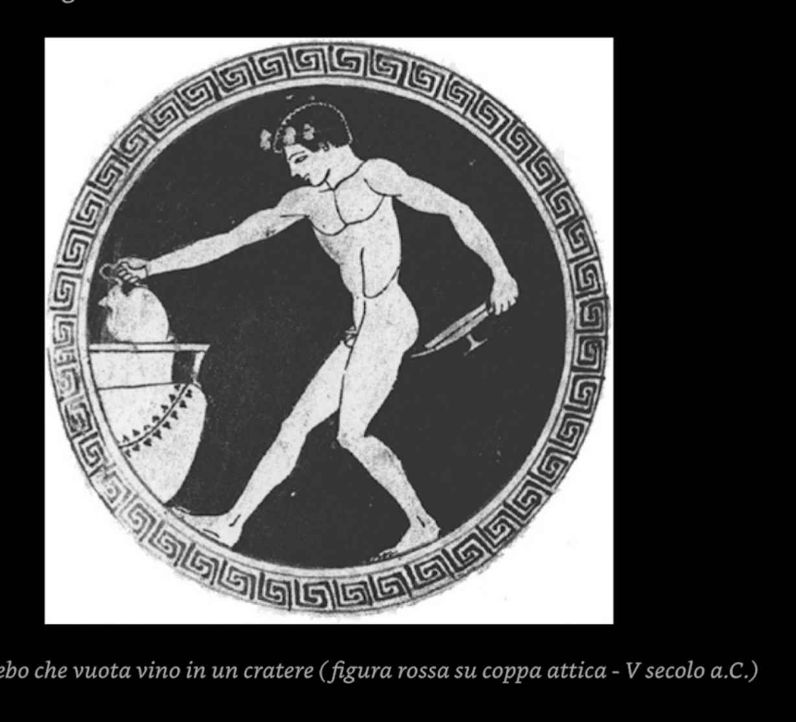
紀元前4世紀の著名な医師であるヒポクラテスは、この流れに反して、“高温で熱せられた身体の健康にとって、冷たい飲み物を摂取することは良くない” と主張し、人々が彼の教えに従おうとせず、“冷たい飲み物の快楽を諦める” くらいなら命を危険にさらすことを嘆いていた。
アレクサンドルス大王（紀元前356〜323年）は、その軍事遠征の過程で、至る所に地中の巨大な穴を掘らせ、冬の間に圧縮した雪を保存させた。これは、夏の酷暑の間に軍隊に提供し、活力を与え、体力を回復させるためであった。彼自身も、凍らせた果汁が大好物であったことが分かっている。
ポンペイとエルコラーノの発掘調査により、当時の社交場であった thermopolia（サーモポリウム、温食販売店）が発見された。そこでは、寒い季節には温かい飲み物が提供され、夏には凍らせた調製品や果汁、蜂蜜（ミード）で人々が涼をとっていた。
地中海地域における目覚ましい「飛躍」は、後述するように、9世紀末にアラブ人がシチリアとアンダルシアを占領したときに起こった。実際、彼らはイタリア南部で「ネヴァローリ（雪売り）」と「ネヴィエレ（氷室）」を発見した。これらは何世紀にもわたり、単なる生理的な欲求（冷たさの快楽）だけでなく、商業的および技術的な課題（すなわち、冷たさの保存と、それに伴う傷みやすい原材料の保存）に対する唯一の解決策であった。
しかし、冷たい飲み物から、後に「ソルベット・グラニート（かき氷状のシャーベット）」へと発展するプロセスを開始するには、サトウキビから作られる砂糖が不足していた。当時の唯一の甘味料であった蜂蜜では、今日のグラニータ（みぞれ状の氷菓）の原型である「凍った水」に近いものさえ作ることができなかったことは、同業である私たちこそが一番よく知っている。ローマ人は古くから蜂蜜で甘みをつけた飲み物であるミード（蜂蜜酒）を知っていたが、これを冷やしたとしても、単なる飲み物の域を出ることはなかった。非常に低い温度であっても、氷の結晶を形成させることはできず、むしろ硬く無定形な混合物になってしまったはずである。
この魅力的なジェラートの歴史の始まりを、今から4000年も前の、中国の大文明が全盛期を迎えていた遥かなる東洋に位置付けることは、決して荒唐無稽なことではないと私たちは考えている。
したがって、このように凍らせた飲み物を消費する習慣が、中国人から隣国であるインド人へ、そして彼らからペルシャ人やアラブ人へと容易に伝わり、最終的に私たちの地中海の沿岸へと到達したことは容易に想像がつく。
重要な著作『食物の歴史』の著者であるレイ・タナヒルは、“中国人はすでに紀元前7世紀に、冬の氷を夏に使えるように保存する方法を発見しており、蒸発冷却によって冷たさを維持する氷室を建設していた” と記している。また、インドのムガル帝国の皇帝たちは、冷却用の素材としての需要を満たすため、アジアのヒンドゥークシュ山脈まで騎馬の伝令を派遣し、デリーまで氷や雪を回収・輸送させていたとも伝えている。
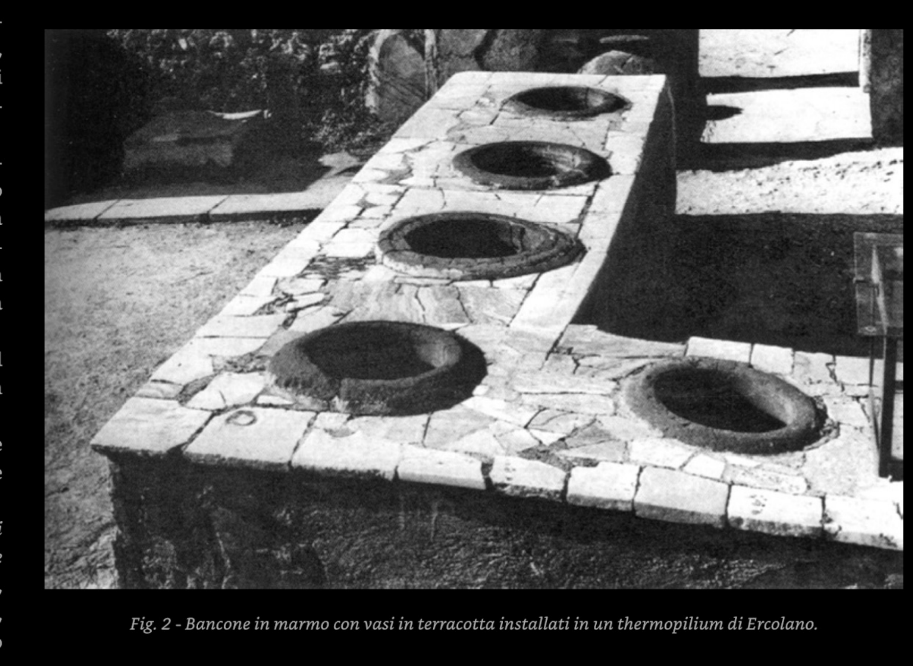
中国では、紀元600年から900年にかけて、ロバ、ヤギ、牛、インド水牛のミルクを使って多くの乳製品が作られていた。凍らせたミルクをベースにした製品の一つは、夏の時期に、非常に爽やかな冷たい料理として提供されていた。クミス（馬乳酒に類似した乳酸菌飲料）と呼ばれるこの特産品は、発酵させたミルクに様々なスパイスで香りづけをし、提供する直前に「凍らせて」作られていた。
この凍らせたミルクの特産品に関する文書化された証拠の一つは、宋代（1100年代から1200年代の端境期）の若い詩人、楊万里の記述から得られている。彼はそれを次のように描写している。“油のようでありながら、サクサクとした食感がある。凍っているように見えて、なおかつ浮いている。玉（ぎょく）のように、皿の底で砕ける。雪のように、陽光を浴びて溶けてゆく”。
エジプトでは、紀元前2500年の第2王朝にさかのぼる墓から、副葬品の一部であった様々な食物や器具の痕跡とともに、2つの部分に分かれた銀製の杯がいくつか発見されている。一方の容器には果汁やワインが入れられ、もう一方の容器には飲み物を冷たく保つための雪や氷が入れられていたと推測されている。
3世紀末頃のアテナイオスは、“クレオパトラは、マルクス・アントニウスとの宴会において、自身の豪華さを誇示するために、純粋な雪に巨万の富を投じた” と記録している。
私たちの中世西洋が困窮と混乱の時代を過ごし、「創造的」な活動が停滞していた一方で、東洋では「創造」が続けられており、他の無数の活動と並んで、今回取り上げる凍結プロセスのような科学的なプロセスにも取り組んでいた。
もっとも、このプロセスはすでに4世紀のインドの詩に記述されている。『パンチャタントラ』の詩の中では、実際に “塩を含む水だけが、本当に凍ることができる” と述べられている。
この意見にはジョゼフ・ニーダムも同意しており、その著書『中国の科学と文明』において、“塩の冷却効果は東洋の発見である” と断言している。そして、それは711年から1492年にかけてのアラブ人とムーア人による地中海支配の間に、彼らを通じて旧大陸に伝わった。
しかし、ジュゼッペ・アヴェラーニ（1662-1738）もまた、西洋におけるこの分野の特定の文化の「遅れ」と欠如を感じ取っていた。その著書『古代人の食糧と晩餐について』の中で、彼は明確に表現している。“エジプトやその他の場所で用いられていた、氷や雪の力を借りずに水を冷やすもう一つの方法については、ガレノスやアテナイオスが伝えている。しかし彼らが、水を凝固させてソルベット（シャーベット）にする方法を知っていたとは私には思えない。なぜなら、あらゆる種類の塩が氷の力を驚くほど強め、それを活性化させ、ほとんどすべての液体を容易に凍らせることができるということを、彼らは知らなかったからである。ギリシャ人やローマ人がしばしば用いた potare nivem、potare glaciem（雪を飲む、氷を飲む）、chiona pinein という言葉も、ソルベット、すなわち人工的に凍らせた水を指しているわけではない”。
東洋の君主たちの食卓において、ワイン、ビール、ミルクを発酵させ、雪や氷と混ぜ合わせて消費していたことは歴史的に文書化されている。これらのデータは、まさに雪の食用利用に関する最初の証拠を提供している。
考古学的な発掘調査により、紀元前18世紀、ユーフラテス川中流のまばゆい大都市であったマリの王宮には、雪や氷を保存するために使用された氷室が3つも存在していたことが証明されている。この3つの「氷室」は、溶けた氷を排水するための管を備えた、レンガ造りの地下建造物であった。入手が困難であったため、凍った雪は極めて貴重なものとみなされ、氷室への立ち入りは宮廷の高官のみに許されていた。
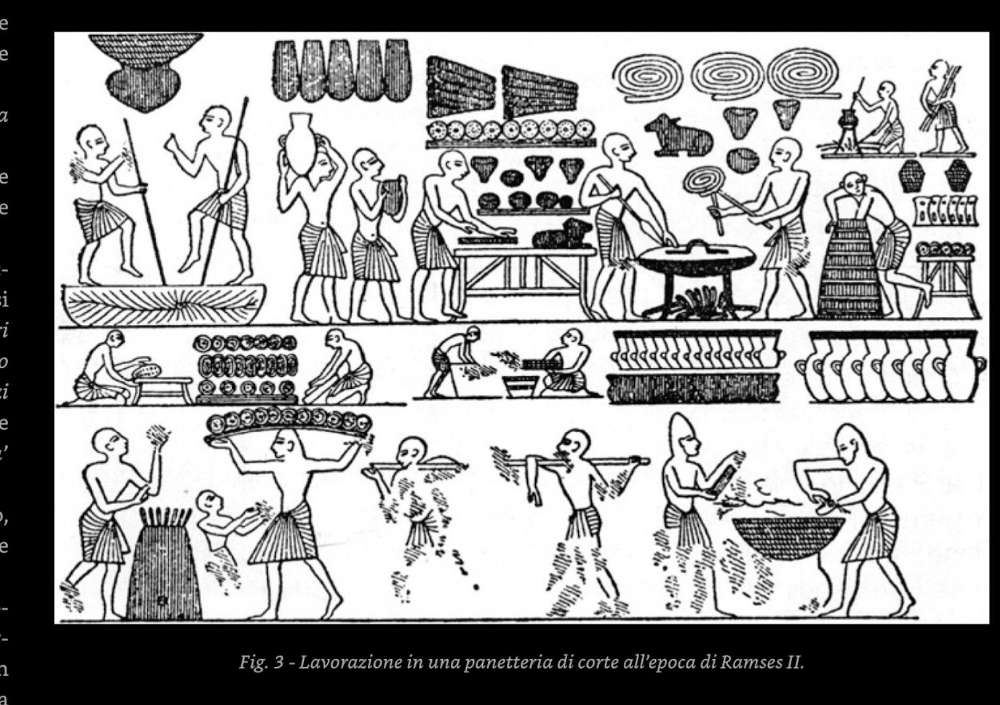
古代エジプト人が墓の壁面を飾るために用いたフレスコ画はよく知られている。そこには、死後の世界で魔法のように実現し、死後も食卓の悦楽を長引かせるための宴が、細部にわたるまで細心の注意を払って描かれている。様々な洗練された習慣の中に、飲み物を冷やす習慣があったが、それは異なるシステムによって行われていた。雪や氷が使われたのは、ごく例外的な場合に限られていた。
一般的に使われていた技術は、今日でも冷気を得るための基礎となっている「科学的」な原理に基づいていた。エジプト人は、冷やすべき飲み物を入れ、湿った布で覆ったアンフォラや革袋を、絶えず「送風」にさらすことで（奴隷たちが大きなうちわを使ってこれを行った）、外部の水分を蒸発させ、状態変化を引き起こし、自動的に冷却を行っていた。
なお、蒸発によって冷気が得られるのは、湿った空気の層を取り除くことによる。この層を取り除かなければ、液体の蒸発面に蓄積しやすくなり、内部の液体の冷却を妨げてしまうからである。
さらに、これは砂漠のベドウィンが最も多く応用していた方法でもあり、彼らは濡れた布で覆った容器を太陽にさらすことで水を冷やしていた。太陽の熱が、布に含まれる水分の蒸発を引き起こすことで状態変化を実現し、熱を奪い、その結果として中身を冷却していたのである。
「アビシニアの帰還兵」（イタリアがエチオピアに植民地を有していた時代を指す）の語るところによれば、水を入れた「ギルビ」（皮製の袋）をトラックのバックミラーに縛り付けておくだけで、単純な送風効果によって水が冷えたという。
美食を愛したローマ人は、「ニヴァタエ・ポティオネス（nivatae potiones、雪で冷やした飲み物）」を作っていた。確かなことは、その時代、都市や交通路沿いに点在していた数多くの「テルモポリウム（thermopolia、簡易食堂）」で飲み物の利用が広がる一方で、貴族の間では、シャーベットの先駆者とも言えるレシピに雪が使われ始めていたことである。果物の混合物や果汁、牛乳を、雪の中に容器ごと置くことで凍らせていた。
アレクサンドロス大王の時代には雪や氷を飲み物の中に溶かしていたのに対し、ローマ人の時代になると技術は洗練され、氷や雪と混ぜ合わせた飲み物から不純物を濾過するための濾し器（コラム・ニヴァリウム colum nivarium）が誕生した。しかし何よりも、容器の外部を雪や氷に単純に接触させることによる「凍結」技術が誕生したのである。
ローマ帝国の崩壊とともに、西方世界は「冷たい製品」の伝統を失った。蛮族の侵入によってもたらされた混乱と無秩序の中で、無数の習慣が失われ、その中にはローマの人々が慣れ親しんでいだ無数の快適な生活様式も含まれていた。温泉、円形闘技場、劇場はキリスト教聖堂の厳かな沈黙に場所を譲り、初期キリスト教は、生活をより快適にするような特定の洗練から人々を遠ざけた。
したがって、美食の大部分が、そしてそれとともにシャーベットが忘れ去られたのは当然のことであった。
一方、東洋では冷たい飲み物の消費がますます広がり、冷たい要素が食事において重要な位置を占めるようになっていった。特にアラブ人はシャーベットの調製において技術を磨き、イタリア南部やスペインの支配期を通じて、再びその普及を促し、それが後に西方世界全体へと広がることになった。アラブ人のおかげで、シチリアとアンダルシアにおいて砂糖の「発見」があり、ペルシャの葦とも呼ばれるサトウキビの栽培が始まった。これは、飲み物としてのシャーベットに対比される、アイス・シャーベットを調製するための基本要素となった。
歴史家イブン・ハカル（Ibn-Ankal）は当時、次のように記している。「パレルモ近郊の海岸沿いには、ペルシャの葦が力強く育ち、地面を完全に覆っている。それから圧搾によって汁が抽出される」。このように、サトウキビの到来によって、シチリアでは新しい何かが確立された。飲み物から、より固体の調製品が生まれたのである。この土地には、後に「ソルベ・グラニート（シャーベット・グラニータ）」と呼ばれるものを実現するために不可欠な要素が「手近に」揃っていた。実際、マイナス温度に達するために不可欠な雪（エトナ山、イブレイ山脈、マドニエ山脈に豊富にある）や海塩（沿岸部に豊富にある）が容易に手に入り、現地で栽培されたサトウキビの砂糖、そしてベルデッリ・レモンがあり、これらによって崇高で爽やかな製品が作られた。現代のレモンのグラニータは、今日のアイスクリームの世界を代表する、より進化した製品への第一歩であった。
戦略的に連動していなかったとはいえ、様々な襲撃によって占領されたこの島（最初の襲撃は652年、その後、シチリア中世の始まりとされる827年の決定的な侵入）において、アラブ人はレモン、ビターオレンジ（スペイン時代に輸入されたスイートオレンジではなく、そのため今日でもシチリアではスイートオレンジをパットゥアッリ Pattualli、すなわちポルトガルのオレンジと呼ぶ）、米、綿花、クワの栽培も導入した。
こうして多くの習慣が花開き、新しい何かが実現された。多くのスパイスで料理に風味をつけるという、典型的なアラブの美食文化は、シャーベットにも好影響を与えた。砂糖や蜂蜜で甘みをつけ、シナモン、サフラン、バラやジャスミンの香りをつけた雪である。
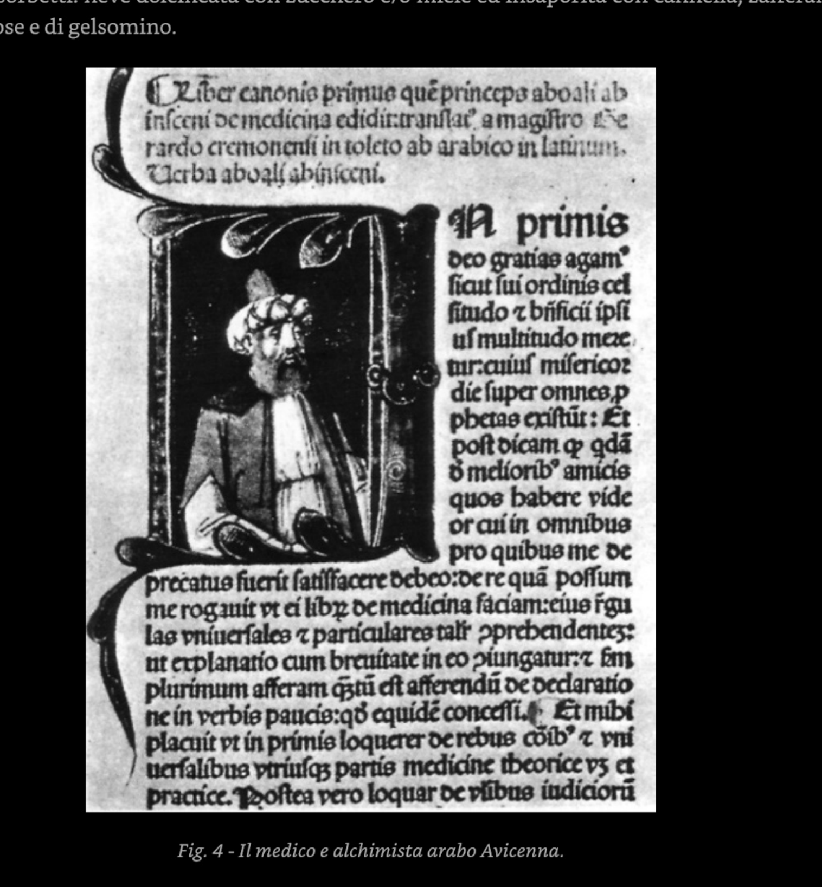
手前味噌ではなく、液体シャーベットから固体シャーベット／グラニータへの歴史的な「状態変化」は、まさにシチリアで起こったのではないかと推測したくなる。シチリアは、その実現に必要なすべての要素を、自然が同時に、そして何よりも入手しやすい形で寛大に提供してくれる場所だからである。豊富に存在する海塩と高い山の雪に、同時に、砂糖という新しい製品を簡単に利用できる環境が結びついた。それまで唯一の甘味料であった蜂蜜は、その氷点降下特性のために、固形感のある製品を得ることを不可能にしていたからである。
ジュネーヴ大学の教授であるルシー・ボランス（Lucie Bolens）がアンダルシアで行った歴史的研究は、極めて豊富な文献資料とともに、「シャーベット（sorbetto）」という名詞の語源と、その化合物の性質を決定的に明らかにした。1984年にパリで出版された著書『中世の飲食（Manger et boire au Moyen Age）』の中で、ボランスは、分析したすべての文書において、この用語が「シロップ」を意味する語根 sh-r-b（アラビア語の写本には母音が表記されない）で構成されていることを指摘している。今日、スペイン語にはワインを指す言葉として shrab という語が残っている。
アンダルシアのレシピから明らかなように、後にシャーベット（sorbetto）へと変化する sh-r-b という用語は、それゆえ「調合された」飲み物を指していた。もはや（ローマ人のような）水 ＋ 甘味料の蜂蜜、あるいは氷 ＋ 果汁 ＋ 蜂蜜の足し算ではなく、水と蜂蜜、あるいは水と砂糖を混ぜ合わせ、そして何よりも沸騰させたものである。ネロの時代のローマ人は、消費する前に水を沸騰させることを学んでおり、それ以前にも貯蔵庫に蓄積された不純物から雪を浄化するためのコラム・ニヴァリウムを発明し、通常は「グラニータ」を甘くするために蜂蜜を使用していた。しかし、砂糖（または蜂蜜）と水という2つの原料を同時に沸騰させ、シロップを得るというクオリティの飛躍をもたらしたのは、ひとえにアラブ人のおかげである。この新しい混合物の中に、所望の香り（大部分は薬草、スパイス、花びら、塊茎などの混合物）を浸漬させ、こうしてできた shrb は温かいまま消費されるか、あるいは氷や雪に浸したテラコッタの壺に入れて「凍結」された。
この瞬間から、近代的なシャーベットの基礎が誕生したのである。
ボランスは、『11世紀および13世紀のアンダルシアのシャーベット、あるいは郷愁と甘美さの結合』と題した研究を導入するにあたり、_「スパイスの香りが漂い、自然に、あるいは加熱した蜂蜜の添加によって発酵した、琥珀色で半透明または不透明なワイン」_を称賛している。彼女はアンダルシアの黄金時代における文化的な出会いを想起し、完全に泥酔しないことを条件に消費が許されていた果物ベースの「発酵飲料」を引用している。さらに、ベルベルのミード（蜂蜜酒）とともに、当時すでに有名であったマラガのワインに言及したアル＝シャクンディー（al-Shaqundi）を引用している。
その後、ボランスはセビリアのアブー・アル＝ハイル（Abu al-Khayr）の写本から、まさに『シャーベットの書』を構成する一連のレシピを収集した。この写本は2部に分かれており、そのうちの1部が「シャーベット」に充てられている。そこには、その組成、加熱処理、およびその後の凍結方法を定義する一連の情報が現れている。
もう一人の学者であるトレドのイブン・ワーフィド（Ibn Wafid）は（1982年にマドリードで出版された『枕の書 Libro de la almohada』にあるように）、robs と jawarish という2つの形態のシャーベットについて語っている。これらは非常に濃厚なシロップであり、加熱後に冷却されることで、砂糖が植物の汁を糖漬けにし、保存できるようにしたものである。以下にその一例を示す。
「赤サンダルウッド半オンスと、砂糖4分の1を取る。これらを1ポンドと4分の1の砂糖、および同量のローズウォーターとともに薄くスライスする。jawarish シャーベットの硬さになるまで煮詰め、火から下ろす」。
いくつかのレシピでは、砂糖が蜂蜜に置き換えられている。
「ケッパーの根の皮、セロリ、ウイキョウ、野生のニンジン（それぞれ2オンスずつ）、ラベンダー、コリアンダー、バジル、チコリ、ペニーロイヤルミント、タマリスク（これらはそれぞれ2掴みずつ）を用意する。これらに、浸出用の布袋に入れたシナモン、クローブ、ショウガ（それぞれ1オンスずつ）、サフラン半ミトカル、およびアクを除いた蜂蜜3ポンドを加える。穀物とハーブを、水に浸した状態で、その成分が抽出されるまで煮る。その後、蜂蜜を加え、布袋を鍋に戻す。これを再び火にかけ、完璧なシロップができるまで煮詰める」。
11世紀に生きたトレドの科学者であり農学者でもある彼は、_「ソルベは体液を冷やし、ほてりを静めるために作られるものであり、香水、水、オイル、軟膏と調和して働き、体内に香りをもたらすものである」_と明記している。
したがって、元々ソルベという名前が与えられたこのシロップ状の混合物の性質について、疑いの余地はない。それが冷たく提供されたからではなく、その構造ゆえにそう呼ばれたのである。この調合品は、「箱の中」に固体の混合物として保存し、必要な時に雪で凍らせることもできた。これは、1748年にミケーレ・マルチェーカによって書かれたレシピ本（30ページで言及）からも明らかである。この製品の歴史における様々な変遷や多くの断片を理解するためには、17世紀以降に文書化された、ソルベを必ず冷たい、あるいは凍った混合物とみなす現代的な視点を一度捨て去り、引用された文献に示されているような古い指示やレシピに目を向け、立ち止まる必要がある。
「ソルベ（sorbetto）」という言葉はラテン語やアラビア語に由来するのだろうか、あるいはさらに時代を遡ると、ペルシャ語やインド・ヨーロッパ語の語根を見出すことができるのだろうか。
私たちは、研究者のルーシー・ボレンズ（Lucie Bolens）が、この語はアラビア語の語根 sh-r-b に由来すると主張しているのを見てきたが、これが最も信頼できる説であるように思われる。
情報の完全性を期すために、私たちの確信とはかけ離れており、それぞれが自らの信念に固執して終わりのない議論の対象となっているものの、カルタニッセッタの「ルッジェーロ・セッティモ」古典高校の哲学教師であり、シチリアの菓子およびジェラートの歴史研究者であるサルヴァトーレ・ファリーナ（Salvatore Farina）の意見も記録しておく。彼によれば、この言葉はラテン語の sorbere（ゆっくりと、一口ずつ味わいながら飲む）から生じたものであり、マルクス・テレンティウス・ワロによれば、これはオノマトペ（擬音語）である。すなわち、_「飲む際のすする音から形成された言葉」である。その裏付けは、シチリア語の surbiri（ちびちび飲む）、surbuni（一口）、そしてまさに surbetta-surbetti に見られ、パスクアリーノはその辞書の中でこれを 「凍らせた甘い飲み物の一種、ソルベ。Frigida sorbillum gelu concretum。surbiri（すする）から。なぜなら、人々がそれをすするからである」_と定義している。
「ソルベの起源に関するこの短い歴史言語学的な注記は、シチリアの菓子のほとんどすべてがアラビア由来であるという俗説を打ち破るのに非常に役立つ」とファリーナは主張する。「さて、私の著書『Dolcezze di Sicilia（シチリアの甘味）』の歴史的概説やカッサータに関するイースターの章で既に書いたことに基づけば、ソルベまでもアラビアのガストロノミーに由来すると考える素朴さは、実にもったいぶったものである！15世紀にわたる輝かしい文明を背景に持ち、いわゆる味覚の喜びを享受することに長けた人々が、アラビア人の到来以前に、フルーツシロップと雪や氷の冷たい混合物を試していなかったとどうして考えられようか？むしろ、豊富な果物があり、雪に関連する確立された経済と文化を持っていたシチリア人が、砂漠から来た人々に、最初は蜂蜜で、後に砂糖（これこそがアラビア人の贈り物である）で甘みをつけた、甘くて冷たい飲み物を初めて味見させた、と考える方が合理的ではないだろうか。そして、後者が surbetta という名前を『訛らせて』sherbet と呼ぶようになったのではないか？」。
これまでは、専門家の間でこの2つの対立する説が重視されてきた。ここで、フランチェスコ・アスページ（Francesco Aspesi）の興味深い研究『Sciroppare e sorbire sorbetti（シロップ漬けにすることとソルベをすすること）』から抽出された、語源に関する考察を紹介する。
ラテン語の sorbēre に遡る動詞「すする（sorbire）」の語根に関して、この研究者は、外見、音韻、意味において対応する形態が存在し、アラビア語に先んじて存在していたアラム語派などの言語への言及を伴う、インド・ヨーロッパ語の語根としての機能を浮き彫りにすることができると指摘している。バビロニア中期および後期には、すするという意味を持つ動詞 sarapu の存在が確認されている。インド・ヨーロッパ諸語の動詞形態（語根機能 sreb-/srb-/serbh に帰属する）と、セム諸語の形態（srb/srp の表現の下にグループ化される）との間における音韻的特徴と意味内容の一致は、注目に値する。実際、私たちは東地中海周辺におけるインド・ヨーロッパ語族の人口とハム・セム語族の人口との間の、大規模かつ多様な接触の言語学的痕跡の1つを目にしているのかもしれない。
アスページは「先史時代から地中海に引き寄せられてきた、変化に富む文化的共通性」を強調し、その後、イタリア語の sciroppo（シロップ）が中世ラテン語の siropus/sirupus に由来し、それがアラビア語の sarab（飲み物、ワイン。sarab は本質的に sariga の不定詞）に基づいて形成されたことを想起させる。この言葉は、ロマンス諸語以外のヨーロッパのインド・ヨーロッパ諸語（ドイツ語の Sirup、英語の syrup…）にも伝わり、イタリア語の sciroppare のような派生動詞も生み出した。もう1つの sariga の不定詞である surbat（一口、薬用の飲み物）がイタリア語や他のヨーロッパ内外の言語に取り入れられるまでのプロセスは、さらに長いものであった。実際、この場合にはトルコ語の serbet が媒介となっており、ピエトロ・デッラ・ヴァッレ（1615年）において、トルコ語の serbet が規則的に scerbetto に変化し、その後、確かに sorbire の影響を受けてジェラートの一種である sorbetto へと変形した経緯は非常に興味深い。この言葉は、トルコ語から直接、あるいはイタリア語を経由して他のヨーロッパ言語に普及した。イタリア語においては、これも派生動詞 sorbettare を生み出し、その再帰代名詞形式は「すする（sorbire）」の再帰形式（sorbettarsi、sorbirsi qualcuno o qualcosa：誰かや何かを甘んじて受け入れる、我慢する）と意味的に重なり合うようになった。
「ソルベ」という言葉の起源をめぐる、この議論百出の論争（筆者にとっては、繰り返しになるがアラビア起源である）に関する短い括りの最後に、有名なガストロノミーの規範書『美味礼賛』の著者である、かの著名なジャン・アンテルム・ブリア＝サヴァランが述べた、権威ある言葉を添えておきたい。
「おお、ルクッルスよ、クラッススよ、レントゥルスよ、アピキウスよ、ペトロニウスよ。汝らの有名なトリクリニウム（食堂）が、その冷たい息吹で熱帯地方を慰めのように通り抜ける、あの極上のソルベによって活気づけられたことは一度もなかった……。汝らが気の毒でならない！」。
地中海地域においても、氷は「氷室（nevaie または neviere）」から得られていた。これは地面に掘られた深さ15メートルに達する深い穴で、冬の間に雪を詰め込んで固め、硬い氷を作った後、木の枝、葉、藁、そして土などを交互の層にして覆ったものである。元々は、エトナ山やヴェスヴィオ山、あるいは我が国の他の火山地帯の火山性地質の割れ目から得られた自然の洞窟や洞穴であった。
食べ物や飲み物を冷やしたいという欲求は常に非常に強く、ローマの上流社会は自宅にさえ氷の貯蔵庫を設けていた。その顕著な例が、ローマのティヴォリにあるヴィラ・アドリアーナの凝灰岩の地下に作られた、非常に美しい氷室である。雪は貴重な商品であったため、大雪は天の恵みと考えられており、それゆえに雪の保存には細心の注意が払われていた。「最終世代」（つまり19世紀）の氷室は、特に融解水の排水に関わる建設的な詳細において、よく設計されていた。
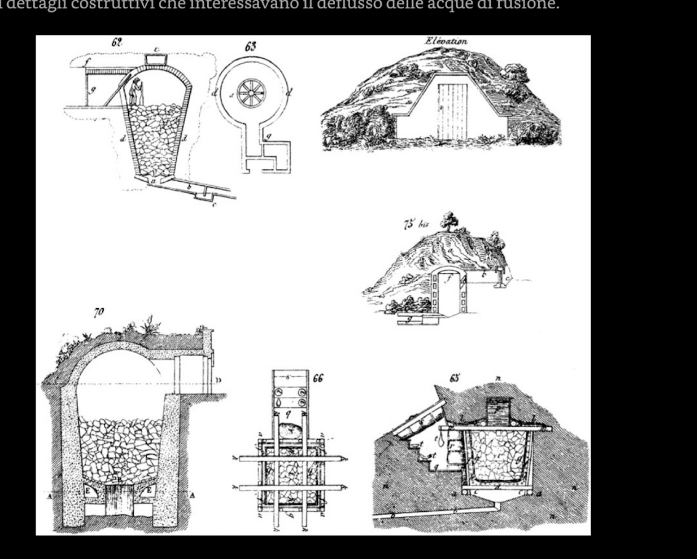
東シチリアでは、取り出す際にすでに形成されたブロックを容易に得られるよう、雪を a sulara（床板のように）、すなわち30〜40 cmの厚さの層にして押し固める習慣があった。あとはその「床」を壊し、ブロックを葉や藁、あるいはキャンバス地で梱包するだけであった。同様の方法は、アンダルシアやスペイン南部全域でも用いられていた。
エトナ山のいくつかの溶岩流洞窟、例えば「泥棒の洞窟」では、19世紀に大量の雪が蓄えられ、夏季には夜間にラバの背に載せて麓まで運ばれ、現地で販売されるか、リポストのエトナ港から騎士団の島であるマルタに向けて船積みされていた。
シチリアの多くの地域には、特に洗練された石造技術を持つ氷室の美しい遺構が今なお残っている。「イタリア・ノストラ（Italia Nostra）」のシラクーサ支部によって見事に保全されているのが、ブッケリのピアーナ地区にある氷室や、シラクーサ県パロッツォーロ・アクレイデの氷室であり、これらは洗練された内部建築を証明している。これに関連して、ブッケリ市が約20箇所の氷室を巡る観光ツアーを主催していることは特筆に値する。また、プーリア州やバジリカータ州でも、かつては非常に盛んな産業であった氷室、氷蔵、洞窟という遺産に対し、公的機関および民間の双方から賞賛に値する関心が寄せられている。
主に石で作られたこれらの建造物は、環境の低湿度、温度変化からの隔離、結露の発生という不都合を考慮して建てられていた。
機転の利く商人たちは、病院から傷みやすい食品の貯蔵庫、魚屋から肉屋、ジェラート店にいたるまで、需要があるところならどこへでも氷を売りさばいた。そして先述のように、マルタ、チュニジア、リビアといった海外の国々へも大量の氷が送られた。
雪の収集と保存は、多かれ少なかれ、どこでも同じ技術で行われていた。今日、私たちは雪の消費がいかに富と洗練の象徴であったかを知っている。私設の氷室（ねびえら）を所有することは、高い社会的地位を示す、一種のステータスシンボルであった。今でも時折、思いもよらない場所から新たな氷室が発見され続けている。
ミラノのサンタムブロージョ修道院（現在のカトリック大学の敷地）における最近の発掘調査では、直径約 8 m の巨大な貯蔵庫の遺構と、それを囲むほぼ無傷の 穹窿（きゅうりゅう）式回廊（ambulacro voltato） の跡が発見された。これは地下の貯蔵庫として機能し、同時に、より高い断熱性を保証していた。
同じくミラノの州立大学の、先の大戦による破壊を経た中庭での別の発掘調査により、古代の「カ・グランダ（Ca’ Granda）」の氷室が極めて良好な状態で発掘され、その後の保存と活用が行われている。
アドリア海沿岸、特にチェゼナーティコでは、1600年代にはすでに魚を保存するための多数の氷室が存在していた。アペニン山脈の内陸部、レーノ川沿いでは、18世紀から19世紀初頭にかけて70以上の氷室があったことが知られている。雪や氷の最大の消費者は、修道院のコミュニティ（特に乳製品の保存のため）や病院であった。
北欧の国々でも氷の取引が広く行われていたことは奇妙に思えるかもしれないが、この活動がイタリア人によってしばしば行われていたことも同様に奇妙に感じられるだろう。例えばノルウェーでは、イタリア人の商人（リグーリアのガット家）が湖の凍った水面を買い取り、そこから手挽きの鋸で切り出された氷のブロックが、帆船によって北海を渡りイギリスへと運ばれた。この氷は地下の洞窟に保管され、おがくずや藁、厚手の布で覆われ、病院や魚屋、肉屋、あるいは傷みやすい食品の保存を伴うあらゆる活動に充てられた。
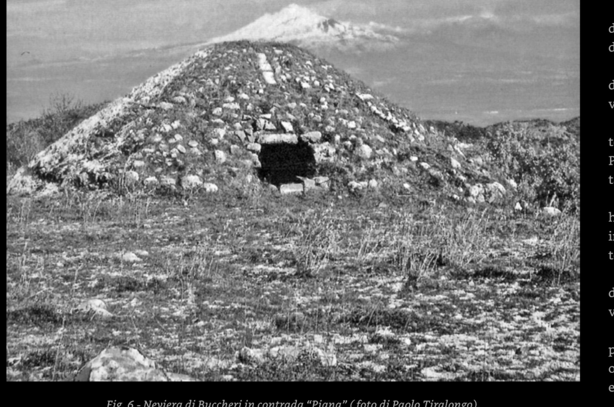
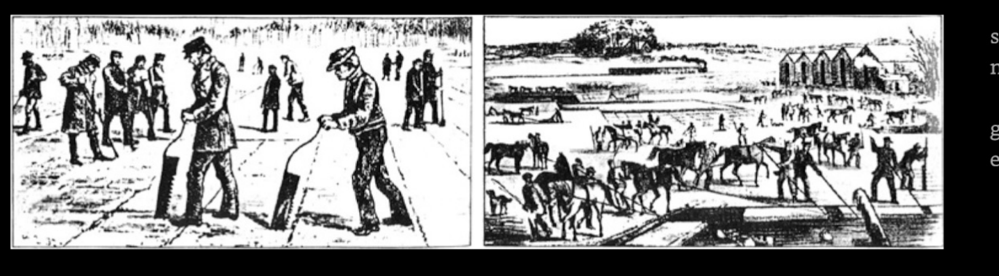
スイスの小さな町ダボスがパリとの間で氷の供給に関する継続的な商業関係を持っていたことや、オーストリア産の氷を満載した船がエジプトに向けてトリエステ港から絶えず出航していたことも記憶に留めておきたい。
シチリアの氷売り（ネバローリ）の氷や、ノルウェーの湖の凍った水面から切り出された氷が、輸送や保管の間に溶けてしまわないことが、なぜ可能だったのだろうか。氷は溶ける際に自ら熱を奪い、その「状態変化」によってさらに冷気を作り出すという性質を考慮する必要がある。さらに、そこに塩（塩化ナトリウム）や、さらには塩化カルシウムや硝石（硝酸カリウム）を振りかけると、非常に低い温度が得られ、氷を長期間保存することが可能になるのである。
これが氷を保存するための、そして同時に冷気を作り出してソルベを作るためのシステムであった。
中世の間に多くの修道会が誕生し、いたるところに修道院が建てられた。それらの行政・会計記録からは、食料や医薬品の調達から、美術史、宗教史、そして「習俗」にいたるまで、極めて興味深い様々な情報を得ることができる。これらの文書は、修道院においていかに雪が盛んに消費されていたかを記述している。それは単に傷みやすい食品の保存のためだけでなく、訪問してきた異郷の友人たちに振る舞い、良い印象を与えるためのソルベを作るためにも、惜しみなく使われていた。その友人とは、影響力があり、後々、特権や便宜という形で報いてくれる気のある人物であったり、修道院にふさわしい歓迎を欠かすわけにはいかない、見習い修道士たちの貴族の親たちであった。
ソルベはゲストから常に最大の好意と歓喜をもって迎えられたようである。とりわけ、それを準備するために必要な食材が、特定の社会的地位にある人々だけの高級な食べ物としての性格を与えていたことは容易に理解できる。例えば、グッビオのサン・ピエトロ修道院の会計帳簿には、特別な支出の理由として次のように書かれている。「修道院に滞在中、貴族のお抱えカフェ職人からペーザロのザヌッコリ殿およびファットーリ殿に提供されたジェラート代として」。
確かなことは、修道院の厨房が調理の場であるだけでなく、当時の食習慣の貴重な証言となる優れたレシピ集や食材リストが作成され、保管される場所となったことである。
修道院の修道士や修道女たちが、冷たい飲み物や粒状のソルベで自分たちの食卓を豊かにしていたのであれば、新たな王廷や、権力者、大貴族の宮廷でどのような発展があったかは容易に想像がつく。
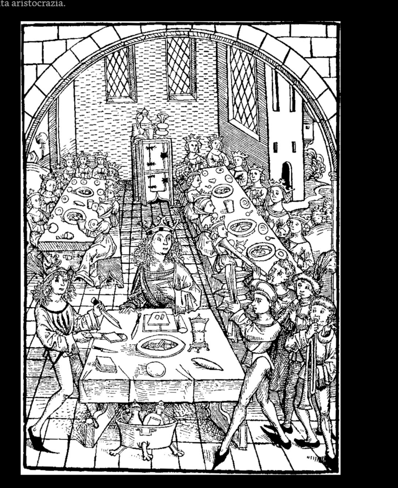
カロリング朝の宴会は有名になり、イスラム世界と緊密な文通を行っていたカール大帝は、食事をいくつかのコースに分けて構成することなど、食卓にも大きな革新をもたらし、会食者の間のマナーに関する規則を広めた。彼は食卓を丸ごとの花や散らした花びらで飾らせ、ゲストに手を洗うことを義務づけ、貴婦人たちが男性と同席して食卓につくことを認めた。
聖地を異教徒から解放するという思想に支えられた十字軍の動きは、他の副産物をもたらした。ヴェネツィアやイタリアの港湾都市は具体的な利益を得て、地中海における海洋都市の覇権は新たな交易の道を開き、ピサやジェノヴァといった都市の繁栄をもたらした。
銀行や商業会社からなる近代的な商人組織が誕生し、ブルジョワジーが台頭し始めた。自立した都市国家を生み出す、ダイナミックで繁栄した新しい西方文明が台頭した。その一部は、フィレンツェやシエナのように16世紀半ばまで、また時にはルッカやヴェネツィアのように17世紀末まで重要な役割を果たすことになる。
このような背景の中で、ジェラートは新たな権力者たちの食卓に、復興した美食の成果として再び姿を現した。
ヨーロッパが中世に背を向け、近代へと入ったとき、新しさの感覚は極めて強烈であり、変化の成果も大きかったため、この時代はルネサンス、すなわちヨーロッパの「再生」と呼ばれた。
ルネサンスは14世紀半ばにイタリアで始まり、フィレンツェがその中心地となった。人々は、自分たちにとって新しく、より興味深い生き方を発見した。あらゆる分野において中世的な概念の克服をもたらす、新しい理想が誕生した。
ソルベの歴史を書き記してきたのは、多くの場合、静かな端役たちであり、そのコーラスの中から時折、主役たちが浮かび上がってきた。私たちのケースでは、修道院の単純な料理人から「貴族の料理人」にいたるまで、何世紀にもわたってレシピ本を執筆してきた多くの料理人、食器室係（クレデンツィエーリ）、リキュール職人たちであった。
ここで、当時美食文化の中心地であったメディチ家統治下のフィレンツェに目を向けてみよう。メディチ家の支配はヨーロッパの流行を左右し、フィレンツェはあらゆる面（芸術、文化、習俗）において、宮廷のゲストとしてしばしば招かれるあらゆるジャンルの著名人が集まるヨーロッパの首都であった。
カテリーナ・デ・メディチと、彼女に同行したトスカーナの料理人や菓子職人たち、そしてその中の一人で、鶏肉の販売人から冷たいデザートの発明家となったルッジェーリという人物については、事実と伝説が入り混じりながら多くのことが書かれてきた。「先祖から洗練された味覚を受け継いでいた」カテリーナは、わずか13歳でオルレアン伯アンリ2世（後のアンリ2世）との婚約が調い、1533年に大勢の随行員とともにマルセイユに向けて出航した。婚礼の祝宴の席で、「砂糖を加え、香りをつけた水で作った氷」のレシピによる冷たい菓子がフランスに初めて登場し、それはトスカーナやシチリアの菓子職人によって作られたと言われている。カテリーナと占星術師や錬金術師たちとの関係は「伝記作家たちを大いに喜ばせてきた」。オジェロ、フェラーリ、シメオーニ、ガウリコ、そして歴史的研究が進められているコジモ・ルッジェーリなどの名が挙げられる。もう一人の興味深い人物は、王妃個人の香料・調香師であったレナート・ビアンコ（ルネ・ル・フロランタン）である。カテリーナはノストラダムスとして知られるミシェル・ド・ノストラダムと密接な関係にあった。彼は有名な『百詩篇』や錬金術の著作のほかに、1556年に『化粧品とジャム論（Traité des fardements et confitures）』を著した。これはクリームや香水による女性の美の維持や、砂糖、蜂蜜、煮詰めたワインのシロップを用いたジャムやゼリーによる果物の保存についての論文である。
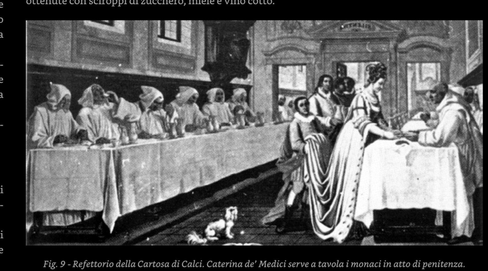
カテリーナとアンリの結婚生活の最初の10年間は、後継者に恵まれなかった（その後、9人の子供が生まれた）。そのため、王妃は常に媚薬となる食べ物を探していた。まさにこの点に関して、王室の厨房にトスカーナ人の料理人がいたことを強調する引用文を紹介する。ピエール・ド・ブラントームは『艶婦伝（Vie des femmes galantes）』の中でこう書いている。「彼女のトスカーナ人料理人たちは、医学が知る限りの知識と、美味を情欲に結びつける方法を実によく心得ていた」。
アーカイブ資料の研究者であるブルーノ・ロリウー（Bruno Laurioux）は、「カテリーナ・デ・メディチがヴァロワ宮廷にイタリア料理をもたらしたというのは、単なるジョークにすぎない」と断言している。しかしその一方で、食文化史家でありルネサンス・バロック期のガストロノミーの専門家であるジューン・ディ・スキーノ（June di Schino）は、「カテリーナが1570年に出版されたバルトロメオ・スカッピの『オペラ（Opera）』の初版を所有していたことは確実である。幸いなことに、彼女の紋章が入った羊皮紙装丁のコピーが現在もフランス国立図書館に保管されており、現代に伝わっているからだ」と強調している。
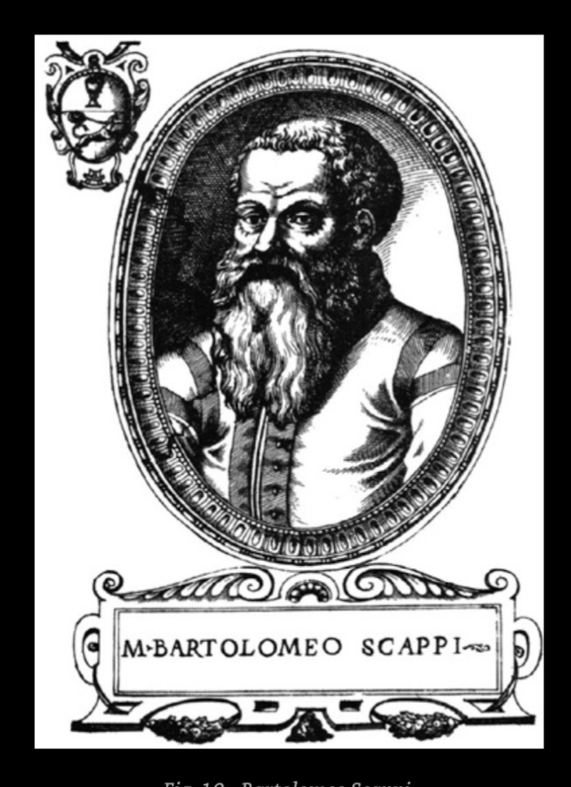
スカッピによる1017のレシピの中には、イチゴとアマレーナ（酸味のあるサクランボ）のソルベの最古のレシピとされるものが含まれている。したがって、この論争にはまだ決着がついていない。
『キリスト教徒の最も敬虔なる陛下マリアの極めて幸福なる婚礼の記述（Descrizione delle felicissime nozze della cristianissima Maestà Maria）』は、フィレンツェで代理挙行されたマリア・デ・メディチと将来のフランス国王アンリ4世の婚礼における、豪華な食卓、そして豊かで贅沢な24品の冷菜、30品の温菜、そして飾り棚のサービス（credenda）の様子を私たちに伝えている。ジョヴァンニ・デル・マエストロ（Giovanni del Maestro）に委ねられたこの宴会は、1600年10月5日にヴェッキオ宮殿で催され、砂糖の彫刻を制作したジャンボローニャや、驚くべき舞台演出と「外国人たちを呆然とさせるような祝宴」の考案者である建築家ベルナルド・ブオンタレンティ（Bernardo Buontalenti）といった芸術家たちが集まり、大いなる華やかさの中で行われた。
18世紀の歴史家ジュゼッペ・アヴェラーニ（Giuseppe Averani）は、その著書『古代の食糧と晩餐について（Del vitto e delle cene degli antichi）』の中で、ブオンタレンティを「極めて聡明な洞察力を持ち、多くの素晴らしい発明によってその名を馳せた人物であり、最初に氷の保存庫（conserve del ghiaccio）を造った」と描写している。
ブオンタレンティは、牛乳、卵、砂糖、ワインをベースにした本物のジェラート（クリーム・ジェラート）を作るために、最初のジェラート製造機（氷と塩を入れる断熱用の二重壁を持ち、中央に材料を入れるシリンダーを備え、クランクで駆動する一種の箱）を設計したとされている。この風変わりな天才建築家は、フィレンツェの現在も存在する「ギァッチャイエ通り（via delle Ghiacciaie）」に、市のために雪と氷の貯蔵庫を建設させ、ジェラートの発展に大きく貢献した。
ヨーロッパのソルベがイタリアで誕生し、その後フランスに広まり、そこからイングランドへ、そして最終的にはヨーロッパ全土へと普及していったことは確実である。
イタリアのジェラートを海外に広めた真の伝道師は、パレルモ出身のフランチェスコ・プロコピオ・クト（Francesco Procopio Cutò）（「デイ・コルテッリ」、フランス語では「デ・クトー」として知られる）であった。彼はブオンタレンティほど多才で天才的ではなかったが、非常に進取の気性に富んでおり、1686年にパリで最古の公共飲食店である「カフェ・プロコープ（Café Procope）」を創業した。そこでは、冷たいコーヒー、フルーツやクリームのソルベ、アニスやシナモンの花、フランジパーネなどが提供された。やがて、その店は「ヨーロッパで最も有名な文学カフェ」としての名声を博すようになる。顧客はコメディ・フランセーズの俳優や女優、ダフ屋、サクラ（claqueurs）、暇つぶしの人々だけでなく、とりわけ哲学者、文学者、劇作家、作家、軍人、音楽家たちであった。ビュフォン、ルソー、ヴォルテール、ダランベール、ディドロ、フォントネル、ド・ミュッセ、ヴィクトル・ユーゴー、ジョルジュ・サンド、バルザック、そしてフランスにギロチンをもたらしたギヨタン医師や、ボナパルト少尉などが名を連ねていた。
プロコピオ・デイ・コルテッリの幸運は、ルイ14世が彼をヴェルサイユに招き、その事業の成功を称え、ほぼ独占的な製造権を与える特許状（特権授与書）を自ら手渡したことで、さらに確固たるものとなった。
この「国王の特許状」に登録されている名物メニューは、大変興味深いものである。
「氷水（今日のグラニータに相当）、フルーツのジェラート、アニスとシナモンの花、フランジパーネ、レモン汁のジェラート、オレンジ汁のジェラート、クリーム・ジェラート、イチゴのソルベ」。
また、彼の使っていた道具のリストも残されている。Couteau d’office（ペティナイフ） - Couteau à batonnage（バトネ用ナイフ） - Couteau à pate（生地用ナイフ） - Découpoir ou coupe-pate（抜き型または生地カッター） - Moule à feuille pour pastillage（パスティヤージュ用の葉の型） - Houlette（羊飼いの杖型の道具） - Moule imitant la hure de sanglier（イノシシの頭を模した型：小型のナポリ風ジェラート用） - Moule imitant la tete de saumon（サケの頭を模した型：小型のナポリ風ジェラート用） - Moule imitant la truite saumonnée（ニジマスを模した型：小型のナポリ風ジェラート用） - Moule imitant le cédrat（シトロンを模した型） - Moule imitant la truffe（トリュフを模した型） - Moule imitant une langue（舌を模した型） - Moule imitant une écrivisse（ザリガニを模した型）。
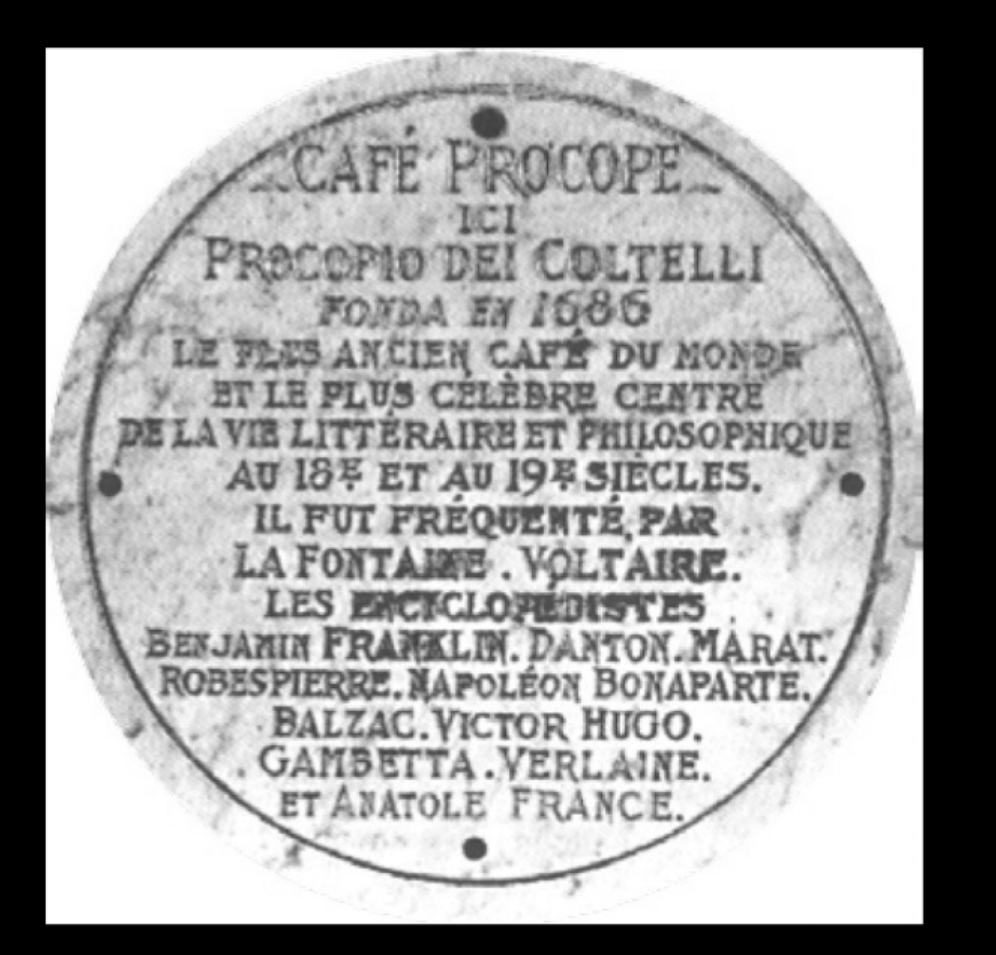
プロコープのオリジナルと思われる「基本」レシピの特徴を示すことは有意義であろう。
生クリーム 半リットル
牛乳 25センチリットル
卵黄 1個
これらをすべて混ぜ合わせ、弱火で5〜6分間沸騰させた後、冷ます。ミックスが冷めたら、好みに応じてオレンジやレモンなどで香りづけし、型に流し込んで凍らせる。
彼の成功に倣い、他のイタリア人たちもパリに新たな店を開き、それらは有名になっていった。例えば、1798年にヴェローニ（Velloni）が開業し、後にトルトーニ（Tortoni）が経営した有名な「カフェ・ナポリタン（Café Napolitain）」などがその代表である。しかし、同様の現象はローマ、パレルモ、ヴェネツィア、ナポリ、トリノ、ウィーン、マドリードでも起こった。
業態は変わったものの、「レ・プロコープ」はフランス国民に提供された最初のイタリアン・ソルベの証人として、今もなお存在している。1770年には、ジェノヴァ出身のジェラート職人ジョヴァンニ・ボージオ（Giovanni Bosio）の手によって、この冷たいデザートがニューヨークに渡り、アメリカの地で新しい流行として成功を収めた。
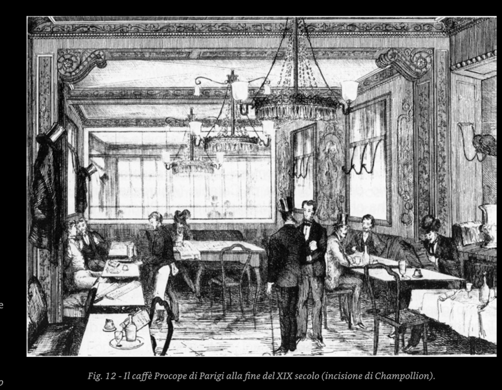
昔のジェラートのレシピの多くは、原材料を列挙する前に「寒冷混合物（composto frigorigeno）」の組成について説明している。
パルマ、ピアチェンツァ、グアスタッラ公妃マリア・ルイザの御用達であった製菓職人・酒造家ヴィンチェンツォ・アニョレッティ（Vincenzo Agnoletti）の例を見てみよう。1822年にローマで出版された彼の著書『製菓・菓子・酒造職人の技術（Le Arti del Credenziere, Confettiere e Liquorista）』において、著者は具体的なレシピに入る前に、「あらゆるソルベを凍らせる方法… 大きな塊の雪を切り出し、それを木桶の底に置き、その下と上に少量の塩を振りかけます。その上に密閉したソルベティエラ（ソルベ容器）を置き、周囲を塩と混ぜ合わせた細かな雪で満たします。ソルベティエラを絶えず回転させ、ヘラ（staccatora）でソルベを時々剥がしながら回転させ続けます。十分に水分が抜け、固まったら、ソルベティエラに蓋をし、木桶の栓を抜いて水を排出し、別の雪を入れます。その後、ソルベをしっかりと練り上げ（mantecare）、程よい状態になったらガラスの器に盛り付けて提供します」と説明している。
1592年、ガリレオ・ガリレイ（Galileo Galilei）は最初の温度計を開発した。これを1714年にガブリエル・ダニエル・ファーレンハイトが、続いてアンデルス・セルシウス（1701-1744）が改良し、それぞれの目盛りを施して完成させた。
これにより、氷と塩や硝石の様々な配合比率を極めて正確にコントロールできるようになり、製造や保存に適した目的の温度を得ることができるようになった。言うまでもなく、ジェラート作りの作業もこれによって恩恵を受け、経験則に頼る部分が少なくなった。
氷を砕いたり叩いたりすることで表面積が広がり、塩の吸湿作用が強まって、冷却効果が加速・強化されるのである。
アヴェラーニが「氷の効能を見事に強化し、それを活性化させて、ほぼすべての液状物質（あるいは液体）を容易に凍らせることができる」と記しているように、塩のこの作用の発見は、極東（特に中国やインド）からヨーロッパにもたらされたと一般に信じられている。これら東洋の古く豊かな文明が数々の発見をもたらしたことは確かであるが、16世紀のヨーロッパの錬金術師や学者たちがこの分野の科学に果たした貢献もまた、正当に評価されるべきである。
なお、当時の俗語において「インド」という言葉は、「遠く離れた幻想的な場所」を指すメタファーとして頻繁に用いられており、錬金術師たちがその土地に帰せられていた示唆的な効果や喚起力を利用するために、スパイスや薬、調合物の故郷としてしばしば言及していたことも心に留めておく必要がある。
1584年に『自然魔術（Magiae Naturalis）』（冷却法についても扱っている）を著したナポリ出身の学者ジャンバッティスタ・デッラ・ポルタ（Giambattista Della Porta）は、生粋のナポリ人らしく、「宴会の間の主な望みは、氷のように冷たいワインを飲めることである」という前提から出発し、硝石（ \(KNO_3\) 、硝酸カリウム）を入れた木桶にワインの入ったフラスコを入れることを提案している。
16世紀の医師たちは、ワインを飲む際に、氷や雪、硝石で冷やすべきか、あるいは常温で飲むべきかについて意見が分かれていた。アントニオ・ペルシオ（Antonio Persio）は、その著書『温かい飲み物について（Del bever caldo）』（1593年）の中で、「澄んだ飲み物を雪や氷で濁らせるという… 有害な悪習に敢えて及ぶ者たち」に対して憤慨している。
氷を使って何かの温度を下げるという単純なアイデアに関する観察や実験と、医学における冷却の有用な活用という称賛すべき直感は、しばしば混同される。後者は1530年、プーリア地方（サン・ピエトロ・イン・ガラティーナ、レッチェ）に生まれ、パドヴァで活動し没した医師・哲学者マルカントニオ・ジマーラ（Marcantonio Zimara）（1460-1532）の著作『プロブレマータ（Problemata）』に端を発するとされている。
1550年、ローマに居住していたスペイン人医師ブラシウス・ヴィラフランカ（Blasius Villafranca）は、その論文『硝石と呼ばれるものを用いてワインを冷却する方法（Methodus refrigerandi ex vocato salenitro vinum）』の中で、雪と硝石を用いて混合物を急速に冷却する発見を発表した。それは「いわゆる硝石を使ってワインを冷やす方法だけでなく、水や、読むのに興味深く、知るのに必要な様々な天然成分を加えたあらゆる種類の飲料を冷やす方法」であった。
ナポリの医師ラティヌス・タングレド（Latinus Tancredo）は、1607年に著書『De Fame et Siti（飢えと渇きについて）』を出版し、その中で人工冷却の手順に言及している。
電気と磁気の研究者であったフェラーラ出身のイエズス会士ニコラウス・カベウス（Nicolaus Cabeus）（1585年 - 1650年）は、1629年に電気的反発現象について記述し、1644年には硝石30部と水100部を混合することで、その水自体を凍らせることに成功したと報告している。
しかし、単なる一般市民（残念ながら、その名前すら分かっていない）もまた、「奇妙な発見」に挑んでいた。ドイツで出版され、フランスでも紹介されたテキストから翻訳すると、「16世紀半ば、ルネサンスが人々の精神を照らし、多くの発見が世界を驚かせていた頃、カターニアの風変わりで想像力豊かな一人の菓子職人が、冷却水に一定量の硝石を溶かすと、ワインの温度が容器の端で凍るほどに下がることに気づいた。この凍った膜を削り取ると、さらに新たな膜が形成され、こうして次第に、氷状の水とワインが得られるようになった」。この発見には適切な重要性が与えられず、むしろ、縁日や市場の芝居小屋で手品師や奇術師によって利用されていたようである。しかし、何人かの人々は好奇心に駆られ、それを実用化する喜びに浸った。このようにしてシチリア、特にカターニアは、人工氷を考案したという評判を得るに至った。
これらの様々な発見は大きな注目を集めたものの、残念ながら大規模な実用化の機会には恵まれず、そのため食料品の保存、液体の冷却、人工的な冷気の創出、そしてそれによるソルベの製造には、引き続き（塩と硝石を加えた）氷が使われ続けた。
1647年にボローニャで出版されたジョ・フランチェスコ・ヴァッセッリ（Gio Francesco Vasselli）の『L’Apicio ovvero il maestro de’ conviti（アピキウス、あるいは宴会の巨匠）』では、豪華な宴会とそのサービスの描写の中で、「レモン汁、シトロンの花の水、砂糖で作られた非常に冷たいスープ、金で縁取られたクリスタルの小カップ仕立て」が引用されている。16世紀が進むにつれ、ガストロノミーの歴史家であるクラウディオ・ベンポラト（Claudio Bemporat）が強調するように、「貴族の食卓の最後のサービスには、ソルベや、イタリアでもフランスでも大好評を博したシナモン、レモン、シトロンで香り付けされた冷たい水が君臨していた」。
バロックの想像力と技術の表現である、アントニオ・ラティーニ（Antonio Latini）著『Lo scalco alla moderna ovvero l’arte di ben disporre i conviti（近代の給仕長、あるいは宴会を美しく整える技術）』（ナポリ、1692年）では、食事の最後に供されるソルベについて述べており、その中には「スコミーリア（scomiglia）」と呼ばれるチョコレートのソルベも含まれているが、著者は次のように書き添えている。「私はいくつかの飲料やソルベを作るための分量を提示したが、専門家、食器室係、あるいは製菓係の誰かを害する意図は一切なく、ただこの職業の実務経験を持たない人々の教導のためにこれを行った。ナポリでは、誰もがソルベを作る才能と本能を持って生まれてくるように思われるため、この件について長々と論じることはしなかった。したがって、私のこの記述は、熟練者にソルベ作りを教えるためのものではなく、高貴な方々に仕える立場にありながら知識の乏しい人々が、自らの果たすべき役割を正確に理解できるようにするためのものである」。
ラティーニが書き残したレモンのソルベのレシピは以下の通りである。「砂糖3リブラ、塩3.5リブラ、雪13リブラ、レモンは大きいものなら3個、小さいものなら判断に任せるが、特に夏季においてはそのように調整すること」。
スイスのソレンゴ＝ルガーノにある国際ガストロノミー図書館で幸運にも見つけることができた1650年の著書不明のテキスト『Libro d’acqua e conserve（水と保存食の書）』を参照すると、興味深い要素がいくつか見つかるので、ここに紹介したい。
夏の暑い時期に最も需要が多かったであろうおなじみのレモンのソルベのほかに、「冷たい水（acque gelate）」（今日で言うグラニータやソルベ）として以下のものが挙げられている。シトロン水、酸実（ヴィショレ）の水（酸実のソルベ）、イチゴの水（イチゴのソルベ）、シナモン水、ザクロの水（ザクロのソルベ）、メロンの種の水、ジャスミンの水、プラム（ダマスキーナ）の水、酸実なしの酸実水、ピスタチオのソルベ、モスカルジェ（マスカット系ブドウ）のソルベ。
しかし、筆者にとって本当に驚きだったのは、同じ書物の中に卵を使ったレシピが見つかったことである。これは、特にこの書物の出版年代（1650年）を考慮すると、極めて興味深い発見であると思われる。不運なことに、著者の名前も、そして何よりも、ソルベに卵を使い始めた都市や地域がどこなのかも知る術はない。ともあれ、その貴重なレシピをここに引用する。

「卵のソルベを作るもう一つの方法：新鮮な卵を8個または20個用意し、皿の中で実によく泡立てる。その泡立てた卵黄を水と混ぜ合わせ、いつものように（重量は判読不能）砂糖を加え、まず濾してから凍らせる」。
この著者不明のレシピ集は、出版されることなく写本のまま残され、研究者から適切な重要性を与えられなかった他の多くのレシピ集（約100冊にのぼる）と同じ運命をたどった。例外は、大邸宅、王、教皇、高位聖職者、あるいは1420年頃に料理長シカール（Chiquart）に『Du fait de cuisine（料理について）』の執筆を依頼したサヴォイア公アメーデオ8世や、バイエルン＝ランツフート公の料理長であったエーベルハルト（Eberhart）の『Das Kochbuch（料理書）』のような人物に仕えた料理人たちが執筆したテキストである。さらに、アクイレイア総大司教の料理長であったマルティーノ（Martino）による1450年の写本『De arte coquinaria（料理の技術について）』も挙げられる。これは、人文主義者バルトロメオ・サッキ（Bartolomeo Sacchi）（通称プラティナ）による『De honesta voluptate et valetudine（まっとうな快楽と健康について）』（1474年ローマ刊）を通じて、ヨーロッパの宮廷に広く知られるようになった。
多くの料理人は、自分が普段行っていることや口頭で説明していることを文字にして伝えることに慣れていなかったが、16世紀以降、強力な文化的運動を示す注目すべき著作が登場するようになった。
料理人や給仕長たちの著作に劣らず重要なのは、17世紀末から、特に18世紀にかけて豊富な言及が見られる文学作品から抽出できるソルベの描写である。この点において非常に興味深いのは、チョコレートの様々なバリエーションに関するピエロ・カンポレージ（Piero Camporesi）教授の研究書『Il brodo indiano（インドのスープ）』の中の「可搬の至福の永遠（La beata eternità protabile）」という章である。
そこでは、銀製または金メッキを施されたソルベ器（ソルベッティエーラ）が描写されている。これは、ロレンツォ・マoptions（Lorenzo Magalotti）が「凍れる水分と冷たき宝の箱」と定義した、「香り高き雪の冷たき悦び」のための道具である。ソルベ器は、17世紀に生まれ、カンポレージが回想するように「18世紀の雅びな生活の基本行為の一つ」となった「雅びな軽食（merende galanti）」に欠かせないものであった。
「大いなる金メッキのソルベ器が 誇らしげに鎮座し その中央に据えられ 外側はすっかり露に濡れている」
イチゴのソルベのようなフルーツのソルベは常に非常に人気があり、マガロッティは詩の中で次のように描写している。
「クルミ大、あるいはそれ以上の立派なイチゴ4リブラを 冷たい水と、かつてないほど香り高いリキュールで洗い 夜明け頃にそれらを浸し 生クリームの中に沈めて とろりとしたものをこしらえる。もしペルシャの王のものなら 国一つと引き換えにしても惜しまないほどのものを」
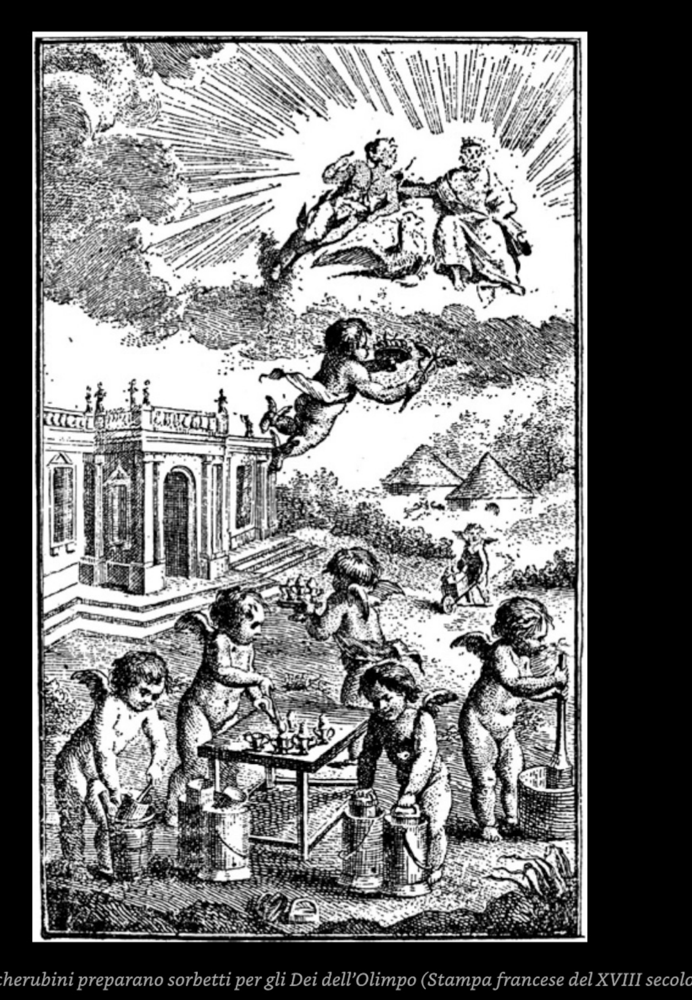
トスカーナ大公コジモ3世の侍医であり、1666年からボーボリの薬局および鋳造所の監督官を務めたフランチェスコ・レーディ（Francesco Redi）は、ロレンツォ・マoptions、ヴィンチェンツォ・サンドリーニ、その他のトスカーナの調香師たちとともに、様々な種類の香り高いチョコレートを製造する実験に参加した。それは、「新鮮なシトロンやレモンの皮、そしてジャスミンの極めて上品な香りを混ぜ合わせ、シナモン、バニラ、アンバー、ムスクを加えることで、素晴らしい風味を醸し出す」ものであった。その極秘のレシピにはカタルーニャ産のジャスミンが使われ、さらに貴重なものとして、ポルトガル王のおかげで1688年にインドからピッティ宮殿に届き、1世紀以上にわたって門外不出とされたゴア産のムゲリーノ（八重咲きジャスミン）が使用された。この「口と鼻の同盟」は、チョコレートの新しい楽しみ方を定着させた。それは「うだるような暑さの日々」に、スペイン語で「ガラペーニャ（garapegna）」と呼ばれたように、ソルベ器の中で凍らせて楽しむものであった。
レーディが称賛したような、粒状の構造を持つソルベ：
「おお、なんと歯の間できしみ、砕けることか のどを通り、食道を下り 心地よい冷たさで胃の中に滑り込んでいく！」
そして、マガロッティがその贅沢な作り方を詩に詠んだ、本物のフローズンクリーム：
「軽く火を通した卵黄を 透き通った磁器の器の中で泡立てよ 極上のものを作りたいなら 精一杯、泡立ててかき混ぜよ。 それから砂糖を加えよ 一摘みどころではない、たっぷりと。 大きなカップに一杯分 けちけちせずに注ぎ込め 少量のムスクと、一房のアンバー 20か30のジャスミンを 小さなレモンを2つほど剥き ただ口元を飾るために添えよ。 […] さて、この美しき仕上がりは 渇ける人々への魂の慰め 正午の時分に 見事な防壁のように その周りにそびえ立たせよ ソルベ器を。 そして見えるとき 器の周囲に 冷たきリボンが 飾られるのが見えたなら 透き通った銀のスプーンを手に取り 剥がし取り、 再び剥がし取れ。 それが瞬く間にまた固まるのが見えるから。 こうして優しく かき混ぜ かき混ぜ こねくり回し これとそれを合わせるうちに 凍った部分と、凍っていない部分が混ざり合い あちこちで固まり始め 少しずつ閉じていくのが見えるだろう よく固まった凝乳（コテージチーズ）のように。 そしてそれはカンディエロ（Candiero）と呼ばれる。 かつてシチリア人がそう名付けたのだ カルボニャーノ卿の渇きを癒すために それを最初に作った者が」
マガラッティは専門家ではなかったものの、ソルベに強い関心を持ち博識な研究者であった。彼の詩からは、卵、砂糖、牛乳、さまざまな香料を用いた「カンディエロ（Candiero）」と呼ばれる調製法の複雑さが際立っている。
1700年代（18世紀）は、今日でも基本的な基準となっている重要な料理や製菓（クレデンツァ）の専門書が次々と出版され始めた時代である。これらを手がけたのは、大貴族や上流ブルジョワジーの厨房で活躍した料理人たちであった。
この世紀において、ソルベは配合の面で決定的な質の向上を遂げる機会を得た。しかし、厳密な技術・製造の面においては、氷と塩（および／または硝石）を満たした桶の中にソルベティエラ（ソルベ攪拌器）を入れる方法から抜け出せなかった。厨房で使われるソルベティエラは錫メッキされた銅やピューター製であり、貴族の席に運ばれる際には、金メッキや銀製のものが用いられた。
したがって、厨房におけるソルベの長い歴史を強調しておく必要がある。そして、ソルベ・ジェラートの歴史を語る上で、その進化に決定的な貢献を果たしたイタリアとフランスの料理界の最も代表的な人物たちに触れないわけにはいかない。彼らの著作は、ガストロノミーの歩み、そしてこの伝説的な製品の歩みにおける、真の金字塔である。
18世紀、正確には1748年は、ミケーレ・マルチェーカ（Michele Marceca）が有名な『マルタのレシピ集』を執筆した時代である。この写本は現在、まさにマルタ国立図書館に保管されている。おそらくラグーサ県の出身と思われるマルチェーカは、当時の厨房の多様な業務だけでなく、さまざまな家事全般にも携わり、「博識なレシピ収集家」としての地位を確立した、極めて多才な菓子・砂糖菓子職人としての素質を見せている。彼の写本は典型的なシチリアの言語で書かれているが、シチリアにおいて、そしておそらくマルタ島において、フランスのガストロノミーや製菓と接触した影響を確実に受けている。
この写本は、マルコ・ゴラッチとルイージ・ロンバルドが監修した『マルタとシチリアを結ぶ菓子の道（La via del dolce tra Malta e Sicilia）』の付録として、2007年に出版された。
「…これは、中世、ルネサンス、バロック期の錬金術師・科学者たちの時代に遡る、古典的な意味での『秘法（シークレット）の書』である。ここに記されているのは、今日私たちが祖母の知恵袋と呼ぶような、人間、動物、植物の多種多様な不調や病気を治すだけでなく、シミ抜き、掃除、消臭、そしてさらに重要なリキュール、保存食、香り水などの調製といった、いわゆる『家庭の錬金術』の多くの問題を解決するための手段である…
焦げ付かせたり、見栄えの悪い色になる果物を使ったために黒くなってしまったジャムを、どうやって赤く戻すかなど、誰が知っているだろうか。また、アニスオイルはどうだろう。その作り方を知ることは、菓子に香りをつけるためだけでなく、強力な消化剤としても役立つ。薬草であるカペルヴェーネレ（ホウライシダ）は、皮膚や髪の多くのトラブルにも効果がある。マルチェーカはそのシロップを勧めている。これは、薬草学の原理を厨房に応用することで、メレンゲをより白く仕上げるのに適している。一方で、殺菌効果と清涼感のあるイチゴを原料として取り入れた『女性の洗顔水』については何と言えばよいだろうか…
…（マルタの）騎士団は圧搾した雪を絶えず、かつ大量に使用していたため、近くのエトナ山に専用の氷室を所有していた。そこから供給される氷は、ヨーロッパ全土から訪れる高貴な賓客たちを驚嘆させたジェラート、ソルベ、グラニータのためだけでなく、発熱した患者を冷やすためにも非常に役立っていた….」
マルチェーカは、当時の典型的な南部言葉を用いて、このレシピ集に『1748年10月1日、私ミケーレ・マルチェーカによって作成された、さまざまな方法で甘いものを作るための秘法の書（Libro de’ secreti per fare cose dolci di varij modi, fatto da me Michele Marceca, sotto il primo ottobre 1748）』という題名をつけた。
水をよく沸騰させ、沸騰したらすぐに柑橘類を投入します。半分火が通ったら、仕上げの湯通し（ブランチング）をするために、すでに火にかけて準備しておいた別の鍋に移します。湯通しが終わったら、冷水に2、3回さらします。そこにジレッポ（砂糖シロップ）を入れることができます。最初からよく火が通っていれば、レンビア（容器）から取り出す必要はなく、砂糖が熱すぎない状態で仕上げることができます。
必要な分量に応じてレモンの果汁を用意し、布で漉します。次にジレッポを用意し、強い「大羽（gran piuma）」の状態（高温のシロップの段階）まで煮詰め、火から下ろします。絶えずかき混ぜながら、そこにレモン果汁を加えます。かき混ぜ続け、固まり始めたら箱や都合の良い容器に入れ、凍らせて使用したい時に備えます。 その割合は、水1クアルトゥッチョ（約1リットル）に対して、この調製物を7オンスまたは8オンス（約200〜230g）とし、水によく溶かします。琥珀（アンバー）の香りを少し加えることもできます。
よく熟したヴィショラを用意し、わら（濾し器）を使って果汁を搾り取ります。次にジレッポを用意し、強い「大羽」の状態まで煮詰め、火から下ろしてかき混ぜ始めます。そこにヴィショラを加え、よくかき混ぜます。固まり始めたら箱に入れます。これで完成です。その割合は、ジレッポの3分の1以上多め（の果汁）とします。使用する際は、水1クアルトゥッチョに対してこの調製物を7オンス半（約215g）加え、水でよく溶かしますが、シロップ状にする方がより良いでしょう。 イチゴでも同様に作ることができますが、溶かす際にふるいで漉すとより良くなります。イチゴにお湯を少し注ぎ、わらで漉すとより美味しく仕上がります。分量は上記と同じです。
メロンの種を用意し、皮をむいて、オレンジフラワーウォーター（acqua di zagari）を少し加えながら細かくすり潰します。よく潰せたらジレッポを用意し、強い「大羽」の状態まで煮詰め、火から下ろします。絶えずかき混ぜながら、そこに潰した種を加え、よく混ぜ合わせます。完全に馴染んだら箱に入れます。作る際の割合は、種6オンスに対して砂糖2ポンドとします。凍らせる時は、水1クアルトゥッチョに対してこの調製物を7オンス半加え、水によく溶かします。
型を用意し、水で満たします。作りたいオレンジ2個につき、型2個半分の水を用意します。オレンジのコンセルヴァ（保存食・ジャム）を用意し、その水に適量加えます。コンセルヴァがない場合は、砂糖漬けの皮（ピール）を用意してよくすり潰し、水に入れてよく馴染ませ、ふるいで漉します。漉した後、ジレッポを適量加え、果物2個につきポルトガルオレンジ（スイートオレンジ）の搾り汁を絞り入れます。オレンジの果汁がない場合は、オレンジフラワーウォーターを少し加えます。その後、これらをボッツォーネ（冷却容器）に入れ、しっかりと凍らせます。中身が十分に凍ったら、型を用意して隅々まで満たし、穴（注ぎ口）に小枝を挿し、型をしっかりと閉じて、包装紙（carta strazza）で包みます。すぐに、底に十分な雪を敷き詰めたバケツの中に入れます。型を配置するにつれて、型同士が触れ合わず、すべての場所に雪が行き渡るように隙間を開け、たっぷりの雪で覆います。果物型をすべて入れ終わったら、バケツを雪で完全に覆い、雪をしっかりと押し固めます。15分（半1/4時間）ごとに底から水を抜き、雪をしっかりと押し固め、わら（マット）で覆っておきます。果物型をバケツに2時間ほど入れておきます。型を取り出す前に、葉を少し入れた別のボッツォーネをしっかりと冷やしておきます。型が十分に冷えたら、雪から型を取り出し、素早く紙をはがし、型を水にさっと浸してから注意深く開き、果物を慎重に取り出します。その後、素早く着色し、取り出すたびに葉を間に挟みながら、冷やしておいたボッツォーネに入れていきます。ボッツォーネを雪でしっかりと覆っておけば、雪を切らさない限り、果物型ジェラートを好きなだけ保存できます。着色には、少量のレモン汁で溶いたサフランを使い、筆ですべて塗っていきます。
桃で作る場合は、桃のコンセルヴァを使用します。ない場合はアプリコットのコンセルヴァ、あるいは必要に応じて梨など、使用する任意のコンセルヴァで代用できます。これにレモン汁を少し加えます。凍らせる手順はオレンジと同様です。これらには、黄色を塗った後、少量のレモン汁で溶いたコチニール（赤色色素）で赤みを少しつけます。コンセルヴァがない場合は、砂糖漬けの果物をよくすり潰し、ふるいで漉したものを使用します。
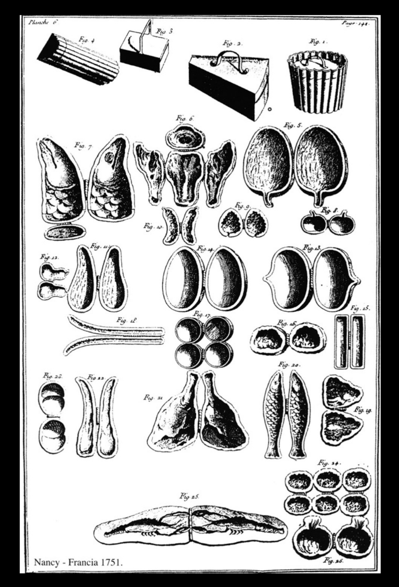
「ある種の弱酸性ソルベの摂取は、我々の体内において、浸透し、滞留している粘液質を溶解するという作用をもたらすはずである（中略）したがって、あらゆる種類の急性の発熱や炎症性疾患において、レモンやシトロンを用いたソルベの使用は、最も強力な去痰（分解）剤であり、血液を浄化するための最良の治療薬である」
「弱酸性ソルベの肉体に対する効能について論じた後、精神に対する影響についても言及することを許されたい。生理学的に言えば、循環を遅らせることで、怒りの爆発を和らげることができる。弱酸性ソルベは繊維組織を潤す性質を持っているため、血液を本来の粘性に引き戻し、我々の心をより快活にさせると同時に、平穏を乱していた鬱陶しい思考を散逸させることができるのである」
「寒い季節の体調不良を予防するためには、火鉢の代わりに芳香性ソルベを使用するのが極めて適切である（中略）それによって無数の病を避けることができ、また、卒中発作や麻痺などを防ぐためにも大いに効果的である。（中略）事実（中略）チョコレートのソルベは、疝痛や壊血病に対して非常に有益な治療薬であり（中略）痛風、遊走性、あるいは原因不明の痛みに対しても驚くべき効果を発揮することが分かっている」
「もう一つの芳香性ソルベであるシナモンのソルベは、（中略）頭痛や胃痛、その他の病に対して極めて効果的である」
「コーヒーのソルベは注意して服用されるべきである。これは固形物の消化を助け、体に活力を与えるのに大いに役立つが、過度に使用されると顕著な不調を引き起こす傾向がある（中略）ある人には手の震えを、ある人には動悸を、またある人には頑固な不眠を引き起こすからである」
「最後に、松の実のミルクと呼ばれるもので作られる乳状ソルベは、その栄養価の高さから、消耗性疾患や肺結核において大いに役立つ（中略）したがって、オランダやフリースラントにおいて、飲料として冷たい牛乳だけを用い、古代人のように健康に暮らしているとしても不思議ではない。しかし、牛乳からソルベを作る際には、それが搾取される動物の異なる種について考慮しなければならない。なぜなら、種の間には大きな違いが認められるからである」
1775年、ナポリの高名な医師 フィリッポ・バルディーニ（Filippo Baldini）は、ナポリにおいて『ソルベについて（De Sorbetti）』という重要な著作を出版した。彼はソルベを単なる心地よい清涼飲料という観点からではなく、イブン・ワフィドと同様に、医師としての専門的な視点、すなわち栄養学的、そして何よりも薬理学的な機能から検討した。この考えに基づき、ソルベは「弱酸性ソルベ」「芳香性ソルベ」「乳状ソルベ」の3つのカテゴリーに分類されている。
著者がソルベを医薬品として取り入れる治療法の課題を設定できるようにするためには、まずいくつかの組成特性（化学的、物理的特性：pH（酸性・アルカリ性）、脂質値（植物性・動物性）、タンパク質値、および既知の治療特性（収斂作用、溶解作用など））に基づいて、それらを分類し区別する必要があった。
本書の網羅的な序文において、バルディーニは自身の研究の理由と目的を説明し、次のように述べている。
「……したがって、氷で冷やされた飲料は、より洗練された人間の理性の産物であり、よく秩序化された社会がもたらす多くの恩恵、すなわち実用と歓愉の一つを形成している。……我々は日常的に氷水を飲み、さらにそれを様々な香りや味わいで千差万別に味付けすることを学び、それらに『ソルベ』という名を考案したが、それが状況に応じて我々の健康にもたらす多くの利点については依然として無知である。これが、人間の肉体と精神に対する氷冷飲料の成分、使用、および効果を検証しようと決意した私の夢（構想）の秘密である」
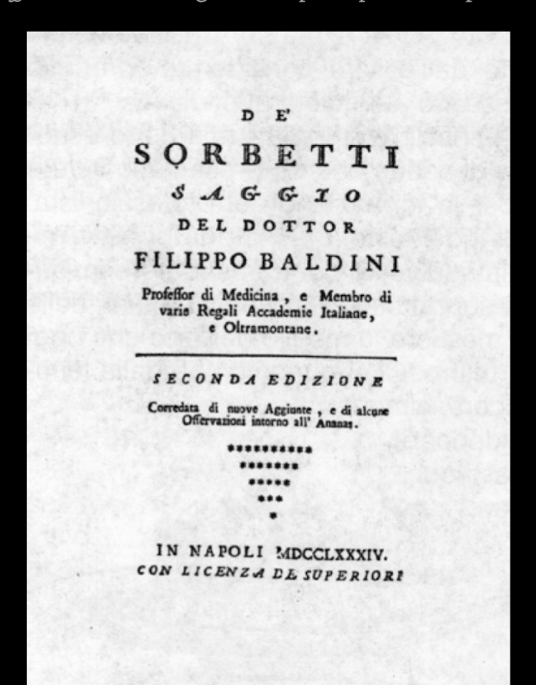
ジェラートの最初の重要な定義は、ディドロ（Diderot）とダランベール（D’Alembert）による記念碑的な『百科全書（Encyclopédie）』（1751年から1784年にかけて執筆）に見られる。そこでは「氷（glace）」の項目に次のように記されている。
「巧みに調製され、柔らかな氷片の形に凍らせた、心地よい味わいの液体に与えられる現代の名称。砕いた氷と塩、あるいは塩がなければ硝石とソーダを使用することで、植物の搾汁から得られるすべての液体を急速に凍らせることができる」
1773年に『洗練された料理人（Il cuoco
galante）』を出版した後、ヴィンチェンツォ・コッラード（Vincenzo
Corrado）は、1778年にナポリで『美食の執事（Il credenziere di buon
gusto）』を出版し、その中で次のように書いている。
「……ソルベとは、水、砂糖、植物の搾汁、芳香のエッセンス、そして動物の乳で構成される、非常に味わい深い、凍らせて凝固させた高貴な冷菓飲料である。ソルベの製造には、その調製方法の多様性だけでなく、導入されている様々な種類のためにも、多くの熟練が必要である。その土地で得られる最も良質な水を使用する必要があり、この飲料の素晴らしさもまた、それに依存している」
この著名な「料理人、哲学者、文筆家」は、ソルベを「高度に凍らせて凝固させたもの」と見なしながらも、依然として「飲料（bevande）」の中に分類している。液体の凍結プロセスに関する新しい発見（フランスの物理学者レオミュールの研究などを参照）があったにもかかわらず、ソルベに一定の「固形性（ボディ）」を持たせることにはまだ成功しておらず、そのため「凍らせた飲料」にとどまっていたと推測せねばならない。
ちなみに、カルロ・ゴルドーニ（Carlo Goldoni）もソルベを讃えて、「……その後、いつもの娯楽のために広間に集まり、冷たい水を飲み、ソルベを飲む」と明確に記している。
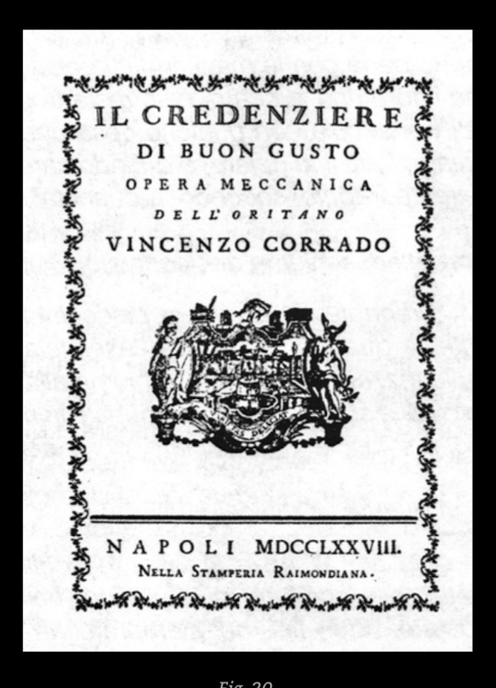
コッラードのレシピの中で特筆すべきは、「3リットルの薄いジュレップ（シロップ）で溶いた30個の卵黄」を用いたソルベや、コラムに記載されている、他の分量として牛乳や卵の使用を規定した「牛乳とコーヒーのトローネのソルベ」や「インペリアル風ソルベ」である。
ジェラートには「牛乳も卵も含まれてはならない」という説法を読んだり耳にしたりし、さらにそれが元々は常に水ベースの単純で原始的なフルーツジェラートであったと信じ込ませようとする風潮に接すると、深い失望を覚えざるを得ない。なぜ誰も「ソルベの歴史」をもう少し注意深く掘り下げようとしなかったのか不思議でならない。何といっても、それほど時代を遡らなくても、数世代にわたる製菓子・ジェラート職人の偉大な師であり、1959年に亡くなった（つまり、私の世代の同僚にあたる）ジュゼッペ・チョッカ（Giuseppe Ciocca）の広く普及したシンプルなマニュアルから、牛乳や卵、さらには生クリームまでもが広く「定番」であったソルベの本来の組成を知ることができたはずである。さらに、ヴィンチェンツォ・コッラードは（18世紀半ばに）、すでに「ソルベ・ジェラート」という言葉や「ジェラート」という言葉が使われるようになる前から、ソルベに牛乳と卵が存在していたことを証明している。また、17世紀半ばにはすでに卵と牛乳の使用が報告されていたことも忘れてはならない。
牛乳や卵を含まないソルベ、すなわち単なる平凡で取るに足らない水ベースのフルーツ製品という、一般的に広めようとされているソルベのイメージは、いかなる真剣な歴史的根拠も欠いている。それは恣意的なものであり、我々としては同意しかねる。
最初の凍らせたソルベ（飲料由来のものも含め）が、果汁に蜂蜜、後には（アラブ人によって生産された）砂糖で甘みを加え、雪氷と硝石で凍らせたものであった可能性は非常に高い。しかし、ソルベが宮廷の大厨房に「定住」するやいなや、そこで牛乳や卵、その他厨房が提供するあらゆる食材と出会う機会を得た。ソルベにおける卵と牛乳の存在を証明する非常に豊富な文献が存在しており、1650年から前世紀の1930年代にかけての偉大な液調合師、執事、菓子職人、料理人、製菓子・ジェラート職人のレシピ集から、いくつかの代表的な例を抜粋して紹介したい。
「1ポンド半のチョコレートを6オンスの砂糖とともに煮て、いつものように裏ごしし、広い器に入れて冷ます。その後、泡が立つようにかき混ぜ、その泡を有孔の杓子（しゃくし）ですくい取って、馬毛のふるいの上に置いて水気を切る。数時間後、クヴィッリェ（cuviglie）、または小さな器に満たし、雪（氷）の中に入れて冷やし固める。」
「コヴィーリア（coviglia）」は、今日でも伝統的なナポリのジェラートの「定番」である。
卵黄30個を3ポンドの薄いシロップで溶きのばし、鍋に入れて火にかけ、木べら全体が濃くなるまでかき混ぜる。その後、ふるいを通して凍らせる容器に移し、真鍮のスプーンで冷めるまで泡立てる。次に雪（氷）の中に入れ、水、またはシナモンオイルで香りづけし、凍らせる。
…
卵黄16個を牛乳3ポンド、砂糖2ポンドで溶きのばしてなじませ、鍋に入れて弱火にかけ、木べらで全体を動かしながら火を通す。
とろみがついたら火から下ろし、好みの味になるまで刻んだ緑色のシトロンの皮を加える。その後、ふるいを通して容器に移し、かき混ぜて冷まし、雪（氷）の中に入れて凍らせる。
牛乳2カラッファで卵黄12個を溶きのばし、1ポンドの砂糖とともに弱火で煮る。雪（氷）の中に入れ、湯むきしてローストし細かく刻んだアーモンド1ポンド、コリアンダー半オンスを加え、シナモン水2オンスで溶かす。これをふるいにかけ、すべてを混ぜ合わせて練り固める（マンテカーレ）。
濃く淹れたコーヒーに牛乳3カラッファを合わせ、そこに卵黄25個と砂糖3ポンドを溶きのばす。すべてを合わせて鍋に入れて火にかけ、とろみがついたらふるいにかけ、冷ましてから凍らせる。
卵のソルベ、ラッテミエーレ（ホイップクリーム）のソルベ、ミルクとマラスキーノ・ロゾリオのソルベ、白クリームのソルベ（sorbets à la crème blanche）、練りミルクのソルベ、バニラのソルベ、コーヒーとフィオール・ディ・ラッテ（ミルクの花）のソルベ、サバイオーネのソルベ、チョコレート・スプーマのソルベ、英国風ソルベ、氷入りの桶の準備方法を伴うフィオール・ディ・ラッテのソルベ、生クリームのソルベ、コーヒーとミルクのソルベ、プレーンミルクのソルベ、英国風ミルクのソルベ（卵黄と生クリーム）、ピスタチオ入りミルクのソルベ、バター入りソルベ、アーモンドクリームのソルベ、ナポリ風生クリームのソルベ、英国風コーヒーのソルベ、緑ピスタチオのソルベ、リキュール入りミルクのソルベ、あらゆる花のソルベ、ミルククリーム入り紅茶のソルベ、ミルククリーム入りコーヒーのソルベ、ミラノ風ポレンタのソルベ、ゼフィロ風ミルクのソルベ、など。
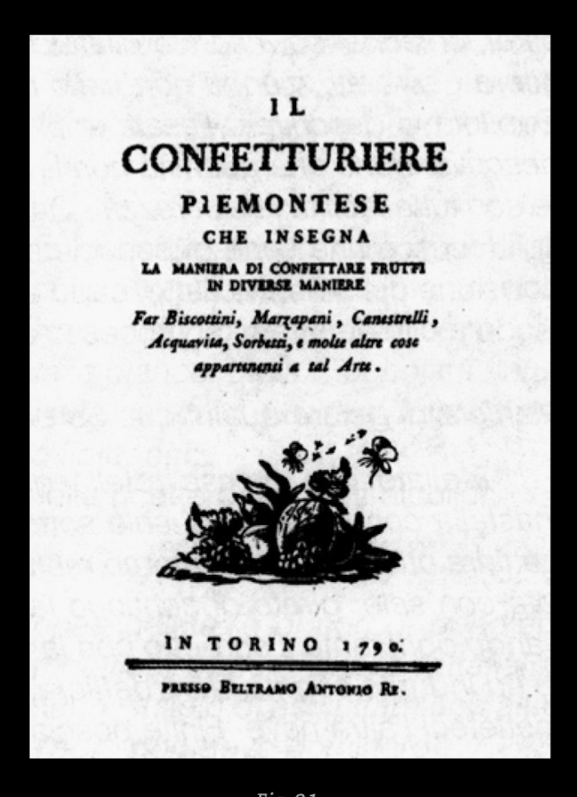
1766年、トリノで『パリで洗練されたピエモンテの料理人（Il cuoco piemontese perfezionato a Parigi）』が匿名で出版された。これは、自らのアイデンティティを意識し始めたイタリアの郷土料理の、豊かな開花の最初の証しとなるものである。この著作は好評を博し、トリノ、ヴェネツィア、ミラノで計22版を重ねた。第28章では「果物の氷、すなわちソルベ」を扱っている。
完全に給仕人の技術に特化した書物として、1790年にトリノで『ピエモンテの菓子職人（Il confetturiere piemontese）』が匿名で出版された。これは『パリで洗練されたピエモンテ의 料理人』と同じ著者によるものと考えられている。この魅力的な本は、「さまざまな方法で果物を砂糖漬けにする方法、ビスケット、マジパン、カネストレッリ、アクアヴィーテ（蒸留酒）、ソルベ、その他この技術に属する多くのものの作り方」を教えている。
極上のダブルクリーム（あるいは良質な別のクリーム）1ボッcale、ミルク1クアルティーノ、卵黄1個、砂糖1ポンドを用意する。これらをしばらく沸騰させた後、火から下ろす。その後、オレンジの花、ベルガモット、またはレモンのエッセンスを加え、錫の型に入れて凍らせる。次に、底に細かく砕いた氷と一握りの塩、硝石（または塩水）を敷いた適切な大きさの桶に型を入れ、型の周囲が完全に囲まれるまで氷と塩を詰め続ける。チーズが完全に凍り、給仕する直前になったら、大釜に温かいお湯を用意し、そこに型を浸して中身をはがし、器に盛り付けてすぐに食べる。
バラのエッセンスを用意し、水と砂糖と混ぜ合わせる。もしバラの季節であれば、大ぶりの花を数輪手にとって細かくすり潰し、1ピンタの水に溶かして半ポンドの砂糖を加える。そのまま30分間浸しておき、その後すべてをふるいにかけ、ソルベティエラ（ソルベ器）に入れて凍らせる。
乳鉢にカーネーションの花びらを一握り入れ、細かくすり潰す。それを1ピンタの水に溶かし、半ポンドの砂糖を加える。砂糖が溶けたら、器から別の器へと3〜4回移し替えて水を叩くように混ぜ、細かいふるいに通してソルベティエラに入れ、凍らせる。
ミルク1ボッcaleと同量のフィオール・ディ・ラッテ（生クリーム）、砂糖5オンス、卵黄5個、細かく切ったシナモン少々、砕いたコリアンダー少々、レモンの皮少々を用意し、すべてを弱火にかけて常にかき混ぜ、沸騰しそうになったら火から下ろす。それを濾し布で濾す。次に6オンスのビスケットを用意し、温風乾燥器で少し乾燥させてから、細かいふるいを通るまでよくすり潰す。これをすべて混ぜ合わせてソルベティエラに入れ、凍らせる。取り出したら型（通常、氷菓子用の型は鉛製である）に入れ、同じビスケットの粉を全体がよく覆われるまで振りかける。その後、濡れた紙でしっかりと包み、再び凍らせる。
ここから、18世紀、さらには19世紀の一部においても、ソルベが給仕や「菓子づくり」の仕事の一部に含まれていたことがわかる。このトリノのテキストには、独創的なものも含め、多数のレシピが掲載されている。興味深いものとして「ビスケットのソルベ」（囲み記事参照）が挙げられるが、これは様々な種類のケーキやクッキーの味を模した、現代の洋菓子風ジェラートのトレンドを2世紀も先取りしたものであった。
18世紀を通じて、そして19世紀前半に入っても、食卓における合言葉は洗練と優雅であった。17世紀の豊満さの後、過度に濃厚で「味わい深く、眠気を誘う」料理を軽くする傾向が現れ、重厚で豊富な大皿料理は、フランス式サービス（同時供卓）や、優雅さと上品さに道を譲った。コーヒー、チョコレート、お茶、ロゾリオ、プティ・フール（小菓子）、そしてソルベの儀式のための、優美な食器類が普及した。フレッシュフラワーや、砂糖やマジパンで作られた花に彩られ、台座やペースト細工（パスティリアージュ）のすらりとした脚の上に載せられた、型抜きのデザートやジェラートが目を楽しませた。優雅な午後の間食（メレンダ）や庭園での冷たいおもてなしには、フルーツ、クリーム、コーヒー、チョコレート、バニラのソルベ、スプーマ、ペッツィ・ドゥーリ（固いアイスケーキ）、シロップ、シトロン水、レモネード、香水（フレーバーウォーター）が勢揃いした。これは給仕技術の勝利であり、フランチェスコ・レオナルディは1807年にローマで出版された著書『近代のアピシウス（Apicio moderno）』、すなわち給仕の技術において、次のように強調している。「この技術がイタリアにおいて極めて急速な進歩を遂げてから数年が経ち、芸術家たちの才気、才能、そして幸福な想像力によって、完成の域に達しようとしている。」
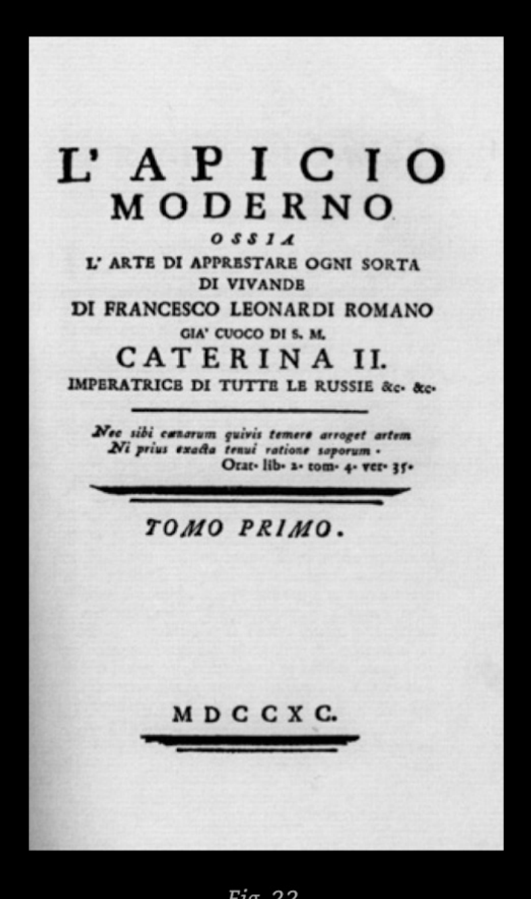
レオナルディは、貴族の館に仕えた後、全ロシアの女帝エカチェリーナ2世の専属料理人および宮廷料理長（スカラコ）となった。この役割は、数十年後にアントナン・カレームによっても担われることになる。イタリアに帰国後、1790年に彼は18世紀で最も重要な料理書である『近代のアピシウス、またはあらゆる料理の調製法（L’Apicio moderno ossia l’arte di apprestare ogni sorta di vivande）』全6巻を著した。上述の給仕の技術に関するテキストは、その高貴な補完版である。レオナルディは、料理とは独立した芸術としての洋菓子を扱ったイタリア初の専門書、すなわち1797年にフィレンツェで出版された『現代の様式および今世紀の嗜好による菓子職人（Il pasticciere all’uso moderno e sul gusto del presente secolo）』や、その他多くの複数巻に及ぶテキストの著者でもあることは強調しておくべきである。
カンポレージによって「給仕技術（台所の洗練された延長線上にあるもの）の最大の理論的・実践的指導者」と称えられたこの料理人は、料理の分野におけるフランスの覇権を認めつつも、「食卓用のファインリカーの調合（これは容易に超えられない域に達している）と、凍ったソルベの操作および多様化」においてはイタリアの優位性を強調している。そして彼はこう続ける。「ここに、全ヨーロッパが誇るべき、贅沢、繊細、そして味覚の2つの対象がある。外国の人々は『イタリアのリキュール、イタリア風ジェラート（Liqueurs d’Italie, glaces à l’italienne）』と呼ぶ。リキュールではトスカーナが、ジェラートではナポリが有名である。ローマ、ボローニャ、トリノにも、フィレンツェやリヴォルノの業者に劣らないリキュール製造者がおり、ジェラートについても同様である。ローマやミラノには、その正確で調和のとれたソルベの味わいにより、砂糖が効きすぎているとされるナポリのものよりも優れていると多くの人々が信じるような芸術家たちが存在する。」